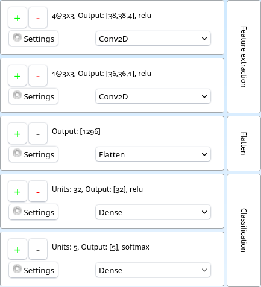
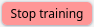
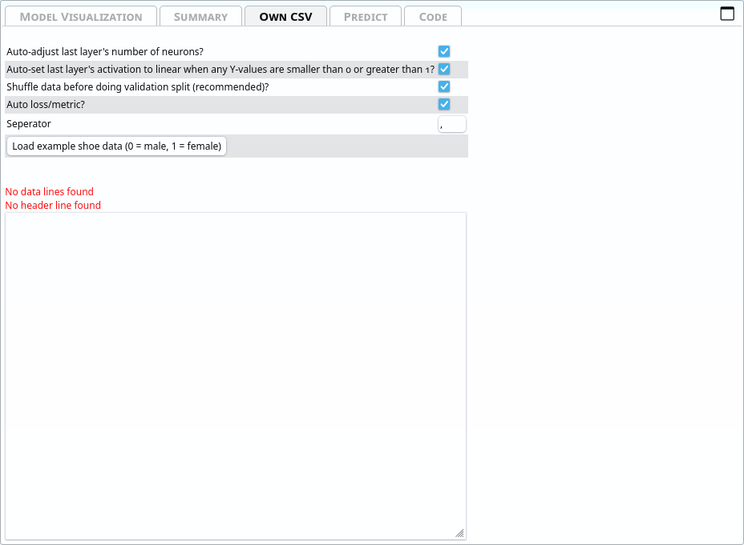
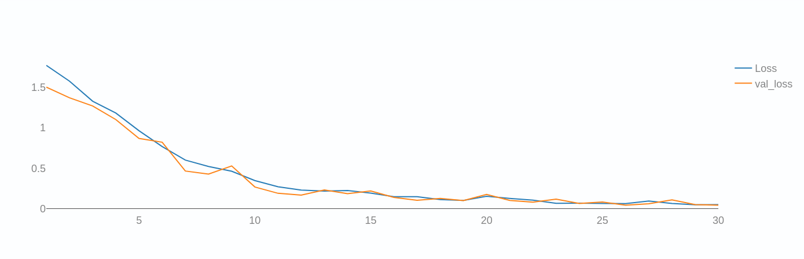
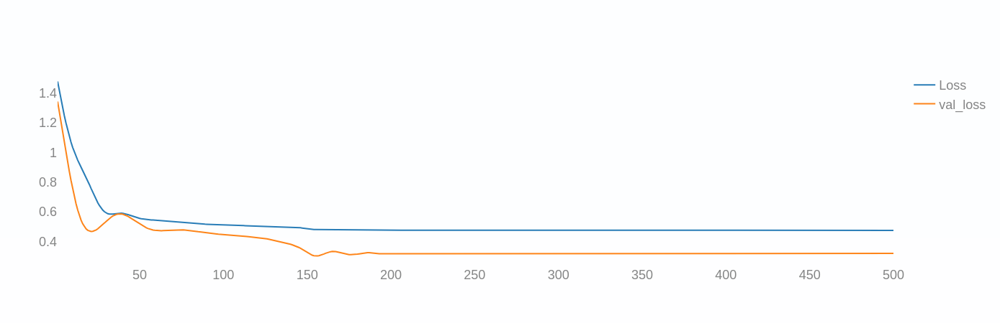
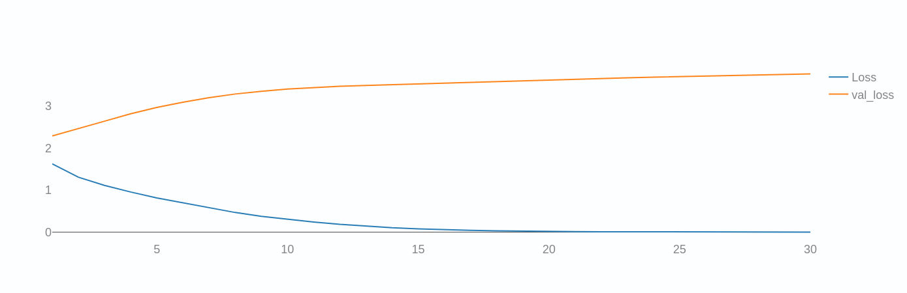
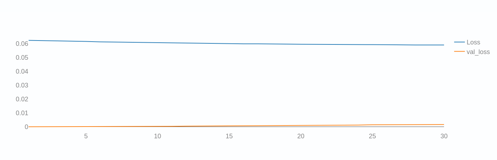
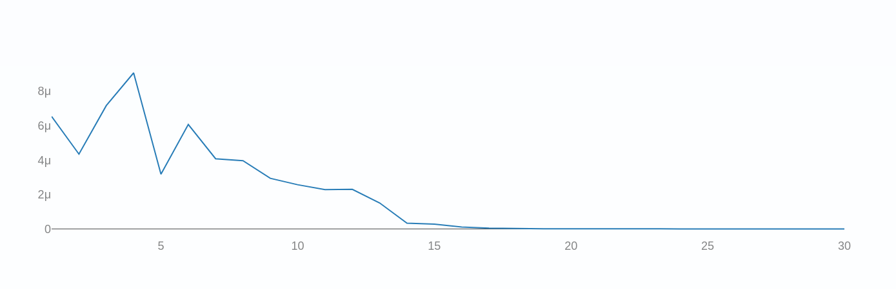
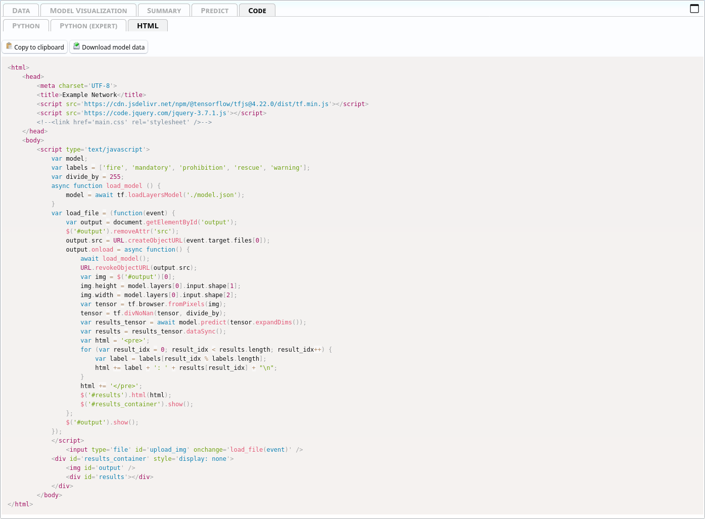
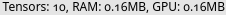

General outline
asanAI offers a simple way of creating sequential neural networks and train them on your own data, from within the browser. It allows you to visualize a lot of different intermediate steps. You can, when done training, also export the trained model to Python and NodeJS.Quickstart
GUI Basics
The bar at the top is called ribbon. It contains general options, applicable to all layers, the data itself or the ability to start the training.

The left side is the layers panel. It shows the layers of the current neural network in the state they are in currently. Also, it shows the description of what groups of layers do on the right side.
Train on images from webcam
The quickest and easiest way to create a neural network is to simply use images from the webcam.Click on the camera icon 📸 in the top-left of the ribbon.
You then get a screen where you can set how many images you want to take via webcam (default: 100) and how much time should between them in seconds (default: 0.9 seconds). If you want to take multiple pictures, set these settings accordingly and click "Take 100 images from webcam (0.9 seconds apart)" on the first category.
If you just want to use a single image, press "Take image from webcam" instead.
While doing these images, please move the object around, so that the neural network can see it from different angles and sides.
Each of these buttons is assigned to a category, which you can name. By default, there are 2 categories, but you can add as many as you like. If you want to remove a category, press "Delete this category". If you want to add a category, press "Add new category".
When you have as many categories and images as you wish, go to the ribbon and click
 .
.
Remember that the image will, by default, be converted to 10x10 pixels, so make sure that the objects you hold in front of the camera are well-visible and clearly distinguishable.
You will then see graphs like these:

For now only the topmost graph is important. The two lines are the Loss and Validation-Loss.
Both show how well the network is performing. A simple (but technically inaccurate) way of thinking of them is the number of errors the network makes while predicting. The lower, the better.
The Validation Loss is based on the Validation Split. This takes a certain percentage out of the training loop and tests the network after each Epoch on data the network has not yet seen.
Both graphs should look similiar. Check how to interpret these graphs here.
When the training is done (or you prematurely cancelled it, which can be done by clicking  in the ribbon), you get automatically redirected to the Predict tab, where your webcam is already enabled and the prediction of what the network thinks is shown life.
The category which has the highest probability is automatically highlighted in green.
Congratulations! 🎉 You have now trained a neural network. You can now export it to python and do any kinds of logic with it.
Train on images from files
Training on images is very similiar to training from webcam images, but instead of the camera icon, click the photo icon (or chose "Own data?" → "Yes, own images/webcam").Right of the category name, you see an Upload button. Drag files onto there or open the file picker.
The rest is the same as with training on webcam images, when done adding images, you may chose to augment them, or straight go to
to start training.
Train on CSV
As Neural Networks as just function approximators (see Basic idea of neural networks), you can also approximate custom functions based on numbers. The easiest way to import custom data from functions of the form \( f(x_1, x_2, x_3, \dots, x_n) = [y_1, y_2, y_3, \dots, y_n] \) is to use the CSV importer.
For this, choose "Own data?" → "Yes, own CSV".
A new tab will appear.

In the large text field, you can enter data in the CSV format:
x_1, x_2, x_3, y_1, y_2, y_3 1, 0, -1, 5, 1, 1 3, 3, 1, 0, 1, 3 ...
The the header-to-training-data-section you can specify which columns (defined by their title in the very first line) should belong to the Input and which ones should belong to the output.

After specifying this, on the right, a preview of how the tensors will look like like.
The input and output shapes are changed automatically according to the data type and the constructed network.
There are also some options at the top:
- Auto-adjust last layer's number of neurons? This sets the number of output neurons depending on the number of values set to "Y".
- Auto-set last layer's activation to linear when any Y-values are smaller than 0 or greater than 1? This sets the activation function of the last layer to Linear automatically when at least one of the output data values are smaller than 0 or larger than 0.
- Shuffle data before doing validation split (recommended)? TensorFlow usually takes the last n% of the input data as Validation Split (if enabled). This way, if the data is ordered, you may miss some categories of data in the training data, because it got shifted to the Validation dataset automatically. This can be counteracted by shuffling the data randomly before the validation split is taken out of the dataset. The correlation between an input and an output stays the same after shuffling.
- Auto One-Hot-encode Y (disables "divide by")? Automatically One-Hot-Encodes if the Y-data has only one column and is a string. Then, it autogenerates labels too.
- Auto loss/metric? Set loss and metric automatically depending on how the data is structured (for classification problems it takes Categorical Crossentropy and Mean Squared Error for anything else.
- Separator Which symbol should be used as CSV seperator (usually ",").
- divide by Which number every value in the tensor should be divided by (by default, 1, and not enabled if auto-one-hot-encoding is enabled.
Basic idea of neural networks
Data
For neural networks, everything is a tensor. Even if you don't know, you have certainly used tensors. Every number, every vector and matrix is a tensor.Tensors are a generalization of matrices. Where matrices have 2 dimensions,
$$ \textrm{Second dimension} \stackrel{\mbox{First dimension}}{% \begin{pmatrix} a_{11} & a_{12} & \cdots & a_{1M} \\ a_{21} & a_{22} & \cdots & a_{2M} \\ \vdots & \vdots & \ddots & \vdots \\ a_{N1} & a_{N2} & \cdots & a_{NM} \end{pmatrix}% }. $$
Tensors have an arbitrary number of dimensions.
An image, for example, consists of 3 channels, one for red, green and blue, each one being a matrix (or submatrix of the image tensor). If the image is 3x3 pixels, the image as a tensor would look like this:
$$ \text{Image} = \begin{pmatrix} \text{Red:} \begin{pmatrix} 255 & 0 & 0 \\ 0 & 128 & 0 \\ 0 & 0 & 64 \end{pmatrix}, \text{Green:} \begin{pmatrix} 255 & 0 & 0 \\ 0 & 128 & 0 \\ 0 & 0 & 64 \end{pmatrix}, \text{Blue:} \begin{pmatrix} 255 & 0 & 0 \\ 0 & 128 & 0 \\ 0 & 0 & 64 \end{pmatrix} \end{pmatrix} $$
The three channels together give us this total image:
255
0
0
0
128
0
0
0
64
255
0
0
0
128
0
0
0
64
255
0
0
0
128
0
0
0
64
=
Any data a computer can handle can be expressed as some tensor. They may have more or larger dimensions, but they are nonetheless tensors.
The description of the size of a tensor is called a shape. A two-by-two-Matrix would have the shape \( [3, 3] \). The image above would have the shape \( [3, 3, 3] \), because its 3x3 pixels and has three channels. An image with 64x64 pixel and 3 channels would be \( [64, 64, 3] \).
One-Hot-Encoding
One-Hot-Encoding is used to symbolize percentages of values of categories. For example, if you want to differentiate between cat and dog, the output vector could be \( [\text{Percentage Cat}, \text{Percentage Dog}] \), which, in total, sums up to 1 (100%).For more categories, you'd add another entry to that column vector, like \( [\text{Percentage Cat}, \text{Percentage Dog}, \text{Percentage Human} ] \), all of which, again, sum up to 1. This can be achieved with the SoftMax-activation-function.
Layers
Layers act as nested functions. Each layer is a function by itself, and with layers, you put them together into one larger function.You can imagine them as such:
$$ \text{Result} = \text{Layer 3}\left(\text{Layer 2}\left(\text{Layer 1}\left(\text{Layer 0}\left(\text{input data}\right)\right)\right)\right) $$
This is called a sequential model, since the data flows through it sequentially. There are other types of models, but they cannot be designed with asanAI.
What do functions have to do with neural networks?
A mathematical function assigns values from one set to values from another. For example, the function \( \text{nth\_prime}(n) \) assigns natural numbers \( (1, 2, 3, \dots) \) to a subset of natural numbers, prime numbers, \( (2, 3, 5, \dots) \).Since parameters for functions can also be matrices, or even tensors, you can define a computer program as a function that gets some input and produces a specific output, depending solely on the inputs.
Imagine a set of images of cats and dogs. These are, as already discussed, tensors. If you want to classify these images, you are actually searching a function such that
$$ f\left(\text{Input Image Tensor}\right) = \begin{pmatrix} \text{Probability cat in percent}\\ \text{Probability dog in percent} \end{pmatrix} $$
Writing this function manually is practically impossible. Every picture of every cat or dog is different. Even if it's the same cat, it is different if the picture is taken half a second later. So you cannot simply say "if this pixel has this color and this pixel has this color, and ..., then it is a cat".
This is where Neural Networks jump in. Via the layers, we can approximate a function that does that, by connecting different very generalized functions (called layer types) that do specific kinds of tasks.
We will cover these layers here.
In neural networks, instead of writing the interna of functions by yourself, you give the network a lot of data and what should come out. Mathematically, you tell the network that the function \( f \) should transform the input set \( X \) to the output set \( Y \). It will try to find values for the parameters of the interna of the functions, whose general outline you need to give by specifying the layer types and their options, so that the difference between the values you specify as ground truth and the values the network gives out is minimized as much as possible.
Dimensionality Reduction
A common goal of neural networks is dimensionality reduction.Imagine a 64x64 image of either a cat or a dog. The image has 3 channels, so in total it consists of \( 64*64*3 = 12288 \) values. If we only have the categories "Dog" or "Cat", we need to reduce the information from 12288 values to only 2 values.
This is a dimensionality reduction, from a tensor of the shape \( [64, 64, 3] \) to a tensor of the shape \( [2] \).
This can be done by several ways. For example, convolutions or pooling layers "extract" information from images and reduce the number of values and therefore reduce the dimensionality of the inputted images.
Training
The loss function creates a single value from the training data \(X\) and \(Y\) such that the lower the number is, the better the results are. This creates a so-called "loss-landscape", that is a function that represents, for each data point, how well the network currently recognizes it.For each point, this is just a single float. The overall loss is the average loss of all points.
For each point, while training, a loss is determined. How exactly this is done is dependent on the optimizer chosen (see Optimizers for more details).
After each Batch, the (trainable) weights and biases are adjusted to to better fit the training data and to minimize the loss. The network structure is not altered while training.
Batch-Size
While training, you (most probably) cannot hold all the data at once in memory. So the data is splitted into so-called batches. A batch is a subset of the \( X \)-input-tensor and the \( Y \)-output-tensor, such that the inputs are still correctly assigned. Imagine you have 1000 input values that correspond to 1000 output values, and having batch-size 3, then the first batch may be:$$ f\left( \begin{pmatrix} x_0 \\ x_1 \\ x_2 \end{pmatrix} \right) = \begin{pmatrix} y_0 \\ y_1 \\ y_2 \end{pmatrix} $$
The next batch may then be:
$$ f\left( \begin{pmatrix} x_3 \\ x_4 \\ x_4 \end{pmatrix} \right) = \begin{pmatrix} y_3 \\ y_4 \\ y_5 \end{pmatrix} $$
and so on, until all values have been seen by the network once. This is then called an epoch.
Epochs
When the network, while training, has seen all training data once, this is called an epoch. You usually need many epochs after each other to train a neural network.Shuffling
Because usually not the whole data fits into memory and has to be sharded into smaller chunks (Batches), it is usually recommended to shuffle the data. Imagine you didn't do this in the example network that should learn to classify cats and dogs, and in the first batch the network there are only cats and in the second one only dogs.Then, the network would learn "cat" in the first batch and be punished for what it has learnt previously in the next batch, where there are only dogs.
It's recommended that in each batch, if possible, there are data from many different categories, so the network doesn't overfit in each batch. Therefore, the data is shuffled by default, so the likelyhood of one batch containing only one type of image is drastically reduced.
How the computer calculates derivatives of very complex functions
One possible definition of derivates is this equation:
$$ f'(x) = \lim\limits_{h \to 0} \frac{f(x + h) - f(x)}{h} $$
The way a computer can approximate derivates of any arbitrary function, no matter how complex, is to set h to some very small value.
Let's say,
$$ f(x) = 2x^2 $$
Of course, the derivative is \(4x\) then. But what does the computer say, when you, for example, set h to 0.0001, at the specific point \(x = 10\)?
$$ f'(x) = \lim\limits_{h \to 0.0001} \frac{f(x + h) - f(x)}{h}$$
$$ \frac{f(x + 0.0001) - f(x)}{0.0001} = $$
$$ \frac{f(10 + 0.0001) - f(10)}{0.0001} = $$
$$ \frac{2(10+0.0001)^2 - 2\cdot 10^2}{0.0001} = $$
$$ \frac{2(10+0.0001)^2 - 200}{0.0001} = $$
$$ \frac{0.00400002}{0.0001} = 40.0002 $$
The real answer is 40, the approximated answer is 40.0002; this is, for our example case, good enough, but it could be improved, of course, by chosing a smaller \(h\).
Predicting
Predicting with a simple sequential neural network works by passing input data through the layers of the network in order, starting from the input layer and ending at the output layer.The input data is first passed through the first layer, the output of the first layer is then passed to the first hidden layer, where it is transformed using a set of weights and biases that are learned during the training process.
This output is then passed through the next hidden layer, where it is again transformed using a set of weights and biases, and so on, until it reaches the output layer.
The output layer produces the final predictions of the network, which can be compared to the expected output during training to adjust the weights and biases.
During the prediction phase, the input data is passed through the trained network, and the output of the output layer is the prediction of the model. The prediction can be in the form of a probability distribution over the possible classes, or a single class.
It's important to note that when the model is trained, it's trained with a specific set of weights and biases and these are the ones that are used during the prediction phase. Also, it's important to note that the prediction phase should be done on unseen data, as the model's aim is to generalize to new examples, not memorize the training data.
Shapes
Tensors have shapes. The shape describe how many data points are in the tensor, and in what way they are arranged.
For example, an Image may have 3 channels (one for each, red, green and blue), and each of those channels may be 10px wide and 20px height. So the total tensor shape may be \([10, 20, 3]\). If you have multiple of these images, lets say five, you may expand the tensor's first implicit index to 5, like this: \([5, 10, 20, 3]\). Then, you'd have 5 images, each 10x20px, with 3 channels each. This, in total, makes \(5 \cdot 10 \cdot 20 \cdot 3 = 3000\) data points.
Input Shape
The input shape of a network is the shape of tensors that the network can process. If the incoming tensor has another shape, it may fail, because the network doesn't know what to do with it.Output Shape
The output shape of a network is the shape of the tensor that comes out of the network. Usually, in asanAI, the output shape consists of Dense Layers that have a One-Hot-Encoding (though this may be different for special kinds of networks not covered in this documentation).For example, if you have 5 categories as a one-hot-encoded softmax'ed vector like this: \([0, 0.8, 0.1, 0.05, 0.05]\), the output shape is \([5]\)....
Overfitting
Overfitting is a common problem in machine learning, it occurs when a model is trained too well on the training data, and as a result, it performs poorly on new, unseen data. It means that the model has learned the noise in the training data, rather than the underlying pattern.In simple terms, overfitting occurs when a model is too complex and it captures the noise in the training data. This happens when the model has too many parameters compared to the amount of training data available.
Here are some possible ways to avoid overfitting:
Use more data: The more data you have, the less likely the model is to overfit.
Use regularization techniques: Regularization techniques such as L1, L2 or dropout can help to reduce overfitting by adding a penalty term to the loss function.
Use cross-validation: Cross-validation is a technique used to evaluate the performance of a model by dividing the data into multiple subsets.
Early stopping: Monitor the performance of the model on a validation set during training and stop training when the performance on the validation set starts to decrease.
Use simpler models: A simpler model is less likely to overfit than a complex one, thus it is recommended to use simpler models when dealing with small data sets.
Bagging and Boosting: Bagging and Boosting are ensemble methods that can help to reduce overfitting by combining multiple models.
Transfer learning: Use pre-trained models to initialize the weights of the network, this can help the network to converge faster and achieve better performance.
Layer Types
Basic Layer Types
Dense
Dense Layers are used as a general-purpose-function-approximator. The basic mathematical structure of a Dense Layer is as follows:
$$ \text{Dense:} \qquad \underbrace{\begin{pmatrix} y_{0} \end{pmatrix}}_{\mathrm{Output}} = \underbrace{\begin{pmatrix} x_{0} \end{pmatrix}}_{\mathrm{Input}} \times \underbrace{\begin{pmatrix} -1.4404407739639282 \end{pmatrix}}_{\mathrm{Kernel^{1 \times 1}}} + \underbrace{\begin{pmatrix} 0 \end{pmatrix}}_{\mathrm{Bias}} $$
Depending on the Input Shape, the number of elements in both the Kernel and the Bias may change.
This, for example, is a Dense Layer with the input shape \( [2] \):
$$ \text{Dense:} \qquad \underbrace{\begin{pmatrix} y_{0} \end{pmatrix}}_{\mathrm{Output}} = \underbrace{\begin{pmatrix} x_{0}\\ x_{1} \end{pmatrix}}_{\mathrm{Input}} \times \underbrace{\begin{pmatrix} 0.785955011844635\\ -0.015428715385496616 \end{pmatrix}}_{\mathrm{Kernel^{2 \times 1}}} + \underbrace{\begin{pmatrix} 0.123153419419419 \end{pmatrix}}_{\mathrm{Bias}} $$
Flatten
Flatten has no options. It creates a simple vector of any matrix.Example:
$$ \textrm{Flatten}\left( \begin{pmatrix} 0 & 1 & 2 \\ 3 & 4 & 5 \\ 6 & 7 & 8 \end{pmatrix}\right) = \left[0 \quad 1 \quad 2 \quad 3 \quad 4 \quad 5 \quad 6 \quad 7 \quad 8 \right] $$
This is used for Dimensionality Reduction, in asanAI especially for the transfer of image tensors to vectors for Dense Layers (see Network Structures).
Dropout
The dropout layer sets random values to 0 which a probability given in the Dropout-Rate-option.
$$ \underbrace{\textrm{Dropout}}_{\text{Dropout-Rate: 50\%}}\left( \begin{pmatrix} 1 & 2 & 3 & 4 \\ 5 & 6 & 7 & 8 \\ 9 & 10 & 11 & 12 \\ 13 & 14 & 15 & 16 \\ 17 & 18 & 19 & 20 \\ 21 & 22 & 23 & 24 \\ \end{pmatrix} \right) \xrightarrow{\text{Set values randomly to 0 with a 50\% chance}} \begin{pmatrix} 0 & 0 & 3 & 0 \\ 5 & 6 & 7 & 8 \\ 9 & 10 & 0 & 0 \\ 0 & 0 & 15 & 0 \\ 0 & 18 & 19 & 20 \\ 21 & 0 & 0 & 0 \\ \end{pmatrix} $$
This is only active while training.
This is used for avoiding overfitting.
Reshape
This allows incoming data tensors to be reshaped into another tensor. The number of elements does not change, only their arragement.
$$ \begin{pmatrix} 1 & 2 & 3 \\ 4 & 5 & 6 \end{pmatrix} \xrightarrow{\text{Reshape to [3, 2]}} \begin{pmatrix} 1 & 2 \\ 3 & 4 \\ 5 & 6 \end{pmatrix}
$$
The product of all input shape elements must be the same as the product of the desired output shape's tensor.
Activation Layer Types
See Activation Functions. The Activation Layer Types just do the same as the activation functions, but in a seperate layer.Convolutional Layers
convNd (conv1d, conv2d)
Convolutions slide a matrix, called kernel or filter, with width \(x\) and height \(y\) over the data (by strides steps), and, for each submatrix of the size \(x\) by \(y\), multiplying each submatrix with a so-called kernel or filter of a certain size. This reduces dimensionality and preserves the general activation strength at certain submatrices.Example:
Kernel: \( K = \begin{pmatrix} 1 & -1 \\ 0 & 2 \end{pmatrix}\).
Data: \( D = \begin{pmatrix} 10 & 8 & 1 & 4 \\ 4 & 2 & 14 & 5 \\ 12 & 20 & 5 & 19 \\ 32 & 128 & 3 & 30 \end{pmatrix} \).
The first submatrix (without Padding, because it is not needed here for the Kernel fits perfectly when strides = 1) is \( S_1 = \begin{pmatrix} 10 & 8 \\ 4 & 2 \end{pmatrix} \). \( S_1 \cdot K = \begin{pmatrix} 10 & 8 \\ 4 & 2 \end{pmatrix} \cdot \begin{pmatrix} 1 & -1 \\ 0 & 2 \end{pmatrix} = \begin{pmatrix} 10 & 6 \\ 4 & 0 \end{pmatrix} \).
The second submatrix is then \( S_2 = \begin{pmatrix} 1 & 4 \\ 14 & 5 \end{pmatrix} \), which, multiplied by \(K\), is \( \begin{pmatrix} 1 & 7 \\ 14 & -4 \end{pmatrix} \).
When slided over the whole image, the result is \( \begin{pmatrix} 10 & 6 & 1 & 7 \\ 4 & 0 & 14 & -4 \\ 12 & 28 & -5 & 43 \\ 32 & 224 & 3 & 57 \end{pmatrix} \). The kernel is being trained to recognize whatever it needs to recognize.
What the kernel has learnt can be seen by Visualize Layer for images and image-like tensors.
The same principle of a sliding window with matrix multiplications is used in all Convolutional Layers, no matter if 1d or 2d. For 2d, the input tensor must have the shape \( [\text{int}, \text{int}, \text{int}] \) (disregarding the batch size, which would be at first position).
A bias is (if enabled) then added to each output value of this graph.
For 1d convolutions, the kernel can be written as 2d-matrix. For 2d convolutions, the kernel is actually a 3d-cube (the extra dimension being the channels).
conv2dTranspose
A 2D transposed convolutional layer, also known as a deconvolutional layer, is a type of layer used in deep neural networks for upsampling the feature maps. It is the inverse operation of a 2D convolutional layer, and it is used to increase the spatial resolution of the feature maps.A 2D transposed convolutional layer applies a set of filters to the input feature maps, with the goal of increasing their spatial resolution. The filters are applied in a way that is similar to a 2D convolutional layer, but the operation is done in reverse. The input feature maps are upsampled by the transposed convolutional layer by inserting zeros between the elements of the input feature maps, and then applying the filters.
The use of 2D transposed convolutional layers allows to increase the spatial resolution of the feature maps, which is useful for tasks such as image segmentation or image generation. They are used in the decoder part of architectures such as U-Net or encoder-decoder architectures, where the goal is to increase the spatial resolution of the feature maps in order to make the predictions more detailed.
It is a good choice when the goal is to increase the spatial resolution of the feature maps, for example, in image segmentation or image generation tasks. It is also a good choice when working with encoder-decoder architectures, where the goal is to make predictions more detailed.
depthwiseConv2d
A depthwise convolutional layer is a type of 2D convolutional layer used in deep neural networks. It applies a single filter to each input channel independently, rather than applying a set of filters to the entire input feature map.The depthwise convolutional layer applies a single filter to each input channel independently, which means that the number of filters used is equal to the number of input channels. The filters are applied to the input feature map in a way that is similar to a 2D convolutional layer, but each filter is applied only to a single input channel.
The use of depthwise convolutional layers allows for a reduction in the number of parameters and computation in the network, while maintaining or even improving the performance. They also allow for a better representation of the spatial correlations within each channel.
It is a good choice when there is a need to reduce the number of parameters and computation in the network while maintaining or improving the performance. It's also a good choice when working with images and there's a need to preserve the spatial correlations within each channel. They are commonly used in conjunction with pointwise convolutional layers to form a separable convolutional layer, which is a more efficient way of applying convolutional filters to the input feature maps.
separableConv2d
Separable convolutional layers are a type of 2D convolutional layers used in deep neural networks. They are designed to reduce the number of parameters and computation in the network, while maintaining or even improving the performance.A separable convolutional layer consists of two parts: a depthwise convolutional layer and a pointwise convolutional layer. The depthwise convolutional layer applies a single filter to each input channel independently, while the pointwise convolutional layer applies a 1x1 convolution to combine the output of the depthwise convolutional layer.
The use of the depthwise convolutional layer and the pointwise convolutional layer in a separable convolutional layer makes it possible to reduce the number of parameters and computation in the network, while maintaining or even improving the performance. The depthwise convolutional layer reduces the number of parameters by applying a single filter to each input channel independently, while the pointwise convolutional layer combines the output of the depthwise convolutional layer with a 1x1 convolution.
Separable convolutional layers are often used in the early layers of neural network architectures, especially in the mobile versions of the architectures, where the number of parameters and computation is limited. They can also be used as a replacement for standard 2D convolutional layers in cases where the number of parameters and computation is a concern.
It is a good choice when there's a need to reduce the number of parameters and computation in the network while maintaining or improving the performance. It's also a good choice when the model is going to run on mobile devices or other resource-constrained environments.
upsampling2d
Makes images and image-like tensors larger by duplicating lines specified by the size factors \( [w, h] \).
For example, \( \underbrace{\text{upsampling2d}}_{h = 2,\ w = 4}\left( \begin{pmatrix} 1 & 2 \\ 3 & 4 \end{pmatrix} \right) = \begin{pmatrix} 1 & 1 & 1 & 1 & 2 & 2 & 2 & 2 \\ 1 & 1 & 1 & 1 & 2 & 2 & 2 & 2 \\ 3 & 3 & 3 & 3 & 4 & 4 & 4 & 4 \\ 3 & 3 & 3 & 3 & 4 & 4 & 4 & 4 \end{pmatrix} \).
This can be used to upscale images after they have been compressed. E.g. for image segmentation.
Pooling layers
averagePooling (averagePooling1d, averagePooling2d)
averagePooling slides a window with pool size \(x\) and \(y\) as width/height over the data (by strides steps), and, for each submatrix of the size \(x\) by \(y\), calculating the average of all the elements in that submatrix. This reduces dimensionality and preserves the general activation strength at certain submatrices.Example:
$$ \underbrace{\text{averagePooling}}_{\text{Strides: 1x1, Pool-Size: 2x2}} \left(\begin{pmatrix} \color{red}{10} & \color{red}{8} & \color{blue}{1} & \color{blue}{4} \\ \color{red}{4} & \color{red}{2} & \color{blue}{14} & \color{blue}{5} \\ \color{orange}{12} & \color{orange}{20} & \color{green}{-5} & \color{green}{19} \\ \color{orange}{32} & \color{orange}{128} & \color{green}{3} & \color{green}{30} \end{pmatrix}\right) = \begin{pmatrix} \color{red}{\frac{10 + 8 + 4 + 2}{4}} & \color{blue}{\frac{1 + 4 + 14 + 5}{4}} \\ \color{orange}{\frac{12+20+32+128}{4}} & \color{green}{\frac{-5+19+3+30}{4}} \\ \end{pmatrix} = \begin{pmatrix} \color{red}{6} & \color{blue}{6} \\ \color{orange}{48} & \color{green}{11.75} \\ \end{pmatrix} $$
maxPooling (maxPooling1d, maxPooling2d)
maxPooling slides a window with pool size \(x\) and \(y\) as width/height over the data (by strides steps), and, for each submatrix of the size \(x\) by \(y\), extracts the largest number. This reduces dimensionality and preserves the most activated values in certain regions.
Example:
$$ \underbrace{\text{maxPooling}}_{\text{Strides: 1x1, Pool-Size: 2x2}} \left(\begin{pmatrix} \color{red}{10} & \color{red}{8} & \color{blue}{1} & \color{blue}{4} \\ \color{red}{4} & \color{red}{2} & \color{blue}{14} & \color{blue}{5} \\ \color{orange}{12} & \color{orange}{20} & \color{green}{-5} & \color{green}{19} \\ \color{orange}{32} & \color{orange}{128} & \color{green}{3} & \color{green}{30} \end{pmatrix}\right) = \begin{pmatrix} \color{red}{10} & \color{blue}{14} \\ \color{orange}{128} & \color{green}{30} \\ \end{pmatrix} $$
Dropout and noise layers
alphaDropout
AlphaDropout is a variation of dropout, a regularization technique for reducing overfitting in neural networks.
In standard dropout, a random subset of neurons are "dropped out" during each training step by setting their activations to zero. AlphaDropout, on the other hand, sets the activations to a random noise sampled from a zero-mean normal distribution with standard deviation of \(\alpha\) (\(\alpha\) is a hyperparameter).
This way, AlphaDropout allows the model to still learn the mean of the activations while also preventing overfitting and forcing the model to be less sensitive to the specific weights of the neurons. In other words, AlphaDropout regularizes the network by adding noise to the activations, which promotes the network to learn more robust feature representations.
AlphaDropout can be useful for certain types of datasets, such as time-series data, where the activations have temporal dependencies.
This layer is only active during training.
gaussianDropout
Drops out with a gaussian distribution of a specified dropout rate (in the example, 0.2).This is used for simulating real-world-data, which is usually noisy (for example, when coming in over a webcam).
This layer is only active during training.
gaussianNoise
Adds gaussian noise to images. You can specify the standard deviation (in the case shown above = 1) of how noisy the image should be.
This is used for simulating real-world-data, which is usually noisy (for example, when coming in over a webcam).
This layer is only active during training.
Debug Layers
Debug Layer
This layer does not do anything to the data. It just prints them out to console.log.Layer Options
Trainable
If enabled, the network's weights and biases (if enabled, see Use Bias) are changed while training. If not, they stay the same.Use Bias
If enabled, the network has a bias. In Dense Networks, a layer with Use Bias enabled, has this mathematical representation:$$ \underbrace{\begin{pmatrix} y_{0} \end{pmatrix}}_{\mathrm{Output}} = \mathrm{\underbrace{LeakyReLU}_{\mathrm{Activation}}}\left(\underbrace{\begin{pmatrix} x_{0}\\ x_{1} \end{pmatrix}}_{\mathrm{Input}} \times \underbrace{\begin{pmatrix} -1.124836802482605\\ 0.01841479167342186 \end{pmatrix}}_{\mathrm{Kernel^{2 \times 1}}} + \underbrace{\begin{pmatrix} 0.123153419419419 \end{pmatrix}}_{\mathrm{Bias}} \right) $$
A Layer without Use Bias enabled would look like this:
$$ \underbrace{\begin{pmatrix} y_{0} \end{pmatrix}}_{\mathrm{Output}} = \mathrm{\underbrace{LeakyReLU}_{\mathrm{Activation}}}\left(\underbrace{\begin{pmatrix} x_{0}\\ x_{1} \end{pmatrix}}_{\mathrm{Input}} \times \underbrace{\begin{pmatrix} 0.24012170732021332\\ 1.188180685043335 \end{pmatrix}}_{\mathrm{Kernel^{2 \times 1}}} \right) $$
The bias allows the function's output to be shifted in any axis.
Units
In a dense layer, the "units" option refers to the number of neurons or nodes in that layer. A dense layer is a type of layer in a neural network that is fully connected, meaning that each neuron in the layer is connected to every neuron in the previous and next layers.The units option determines the number of neurons in the dense layer, and therefore also determines the number of outputs the layer will produce. For example, if you specify units=32, the dense layer will have 32 neurons, and it will produce 32 output values.
A higher number of units in a dense layer can increase the capacity of the model to learn complex patterns in the data, but it also increases the risk of overfitting. On the other hand, a lower number of units can reduce the risk of overfitting but decrease the model's ability to learn complex patterns.
When choosing the number of units for a dense layer, it's important to consider the complexity of the problem, the size of the dataset, and the capacity of the model. In general, you should start with a small number of units and increase it gradually until you find a good balance between the model's performance and the risk of overfitting.
It's also worth noting that the number of units in the output layer should match the number of classes or output variables in the problem.
Strides
The "strides" option in a neural network layer refers to the step size that the layer takes when moving across the input tensor. In other words, it defines the number of pixels or units that the layer's filter moves when scanning the input tensor.This option is typically used in convolutional layers, which are layers that are used to extract features from images or other grid-like input data. The strides option in a convolutional layer determines how the convolution filter is moved across the input tensor, and it affects the size of the output tensor.
A stride value of 1 means that the filter is moved one pixel at a time, while a stride value of 2 means that the filter is moved two pixels at a time. A larger stride value results in a smaller output tensor and fewer computations, but it also reduces the amount of information the layer can learn from the input.
A stride of 1 is the default stride value for most convolutional layers, and it is often used when the goal is to maintain the spatial resolution of the input tensor. A stride of 2 or more is often used to reduce the size of the input tensor and reduce the number of computations.
It's worth noting that for pooling layers, strides are also used to define the step size of the pooling operation. Pooling layers are used to down-sample the input tensor, and the strides option determines how much the pooling filter moves when scanning the input tensor.
In general, choosing the right stride value depends on the problem, the size of the dataset, and the capacity of the model. It's a good practice to experiment with different stride values to find the best one for a specific task.
Regularizer
Regularization is a technique used to prevent overfitting in machine learning models by adding a penalty term to the loss function. The goal is to prevent the model from fitting the noise in the data, and to encourage the model to have small weights.
The choice of regularization method depends on the specific problem and the dataset. L1 regularization can be preferred in case of sparse data, where only a few features are informative. L2 regularization can be preferred when the problem is not sparse and when you want to keep all the features. L1-L2 regularization can be used when you have both sparse and non-sparse data.
In the context of machine learning, "sparse" generally refers to a dataset or input where a large proportion of the values are zero or near zero. For example, a sparse matrix is a matrix in which most of the elements are zero. A sparse dataset is a dataset where most of the features have little or no variation and thus, little or no informative value.
In the context of regularization, L1 regularization is often preferred when working with sparse data because it tends to push the weights of less important features towards zero, effectively setting them to zero. This results in feature selection, where only the most important features are used for the final model, making it simpler and more interpretable.
In contrast, L2 regularization tends to shrink the weights of all features towards zero, but it doesn't push the weights to exactly zero. This means that it doesn't perform feature selection, and all features are used in the final model.
In general, L1 regularization is more suitable for sparse data, where only a few features are informative, and L2 regularization is more suitable when the problem is not sparse.
l1
Also known as Lasso regularization, it adds a penalty term to the loss function proportional to the absolute value of the weights. The L1 regularization term is defined as \(\lambda\sum_{i=1}^{n}|w_i|\), where \(\lambda\) is the regularization strength and \(w_i\) are the weights of the model. The L1 regularization tends to push the weights towards zero and thus it can also be used to perform feature selection.l2
L2 Regularization: Also known as Ridge regularization, it adds a penalty term to the loss function proportional to the square of the weights. The L2 regularization term is defined as \(\lambda\sum_{i=1}^{n}w_i^2\), where \(\lambda\) is the regularization strength and \(w_i\) are the weights of the model. The L2 regularization tends to shrink the weights towards zero, but unlike L1 regularization, it doesn't push the weights to exactly zero.l1l2
The combination of L1 and L2 regularization is also known as Elastic-Net regularization. The regularization term is defined as \(\lambda(\alpha\sum_{i=1}^{n}|w_i| + (1-\alpha)\sum_{i=1}^{n}w_i^2)\), where \(\lambda\) is the regularization strength, \(w_i\) are the weights of the model, and \(\alpha\) is a parameter that controls the balance between L1 and L2 regularization. This regularization method combines the feature selection property of L1 regularization with the shrinkage property of L2 regularization.Initializers
Initializer set in which way values, mostly the Bias and Kernel, should be initialized as.An initializer is a function used to initialize the weights of a neural network. It is called when the model is first created and its purpose is to set the initial values of the weights. The choice of initializer can have a significant impact on the performance and convergence of the model.
In general, He et al. and LeCun normal/uniform initializers tend to work well for deep networks, while Glorot/Xavier normal/uniform initializers tend to work well for shallow networks. It also depends on the activation function used in the layer.
Choosing the appropriate initialization method for a neural network depends on various characteristics of the data, including the scale of the input and output features, the number of input and output neurons, and the activation function used in the network. Here are some general guidelines for selecting an initialization method based on the characteristics of the data: If the input and output features have similar scales, a good option is to use He uniform or Glorot uniform initialization methods, as they are designed for datasets with similar scale of inputs and outputs. If the input and output features have very different scales, a good option is to use LeCun uniform initialization method, which is designed for datasets with different scale of inputs and outputs. If the activation function used in the network is ReLU, He uniform initialization method is a good option as it's designed for this activation function. If the activation function used in the network is sigmoid or tanh, Glorot uniform initialization method is a good option as it's designed for this activation function. If the number of input neurons is much larger than the number of output neurons, it can be a good idea to use LeCun uniform initialization method. If the number of output neurons is much larger than the number of input neurons, it can be a good idea to use He uniform initialization method. It's important to note that these are general guidelines, and the best initialization method for a particular dataset and neural network architecture may vary depending on the specific problem and optimizer you're trying to solve. It's also important to keep in mind that other factors such as data preprocessing techniques and network architectures can also have a big impact on the performance of a neural network.
glorotUniform
Glorot uniform initializer, also known as Xavier uniform initializer, is an initialization method that uses a uniform distribution with a range of [-sqrt(6 / (n+m)), sqrt(6 / (n+m))] to initialize the weights of neural network layers, where n is the number of input neurons and m is the number of output neurons. It is named after the researcher who proposed it, Xavier Glorot, and is commonly used in deep learning models such as multi-layer perceptrons (MLPs) and feedforward neural networks (FFNs). It can help improve the performance of these types of neural networks by ensuring that the activations of neurons are well-conditioned and that gradients during backpropagation are neither too big nor too small. This initialization method is designed to be used with neural networks that have sigmoid or tanh activation functions. It is generally recommended for datasets that have a similar scale of inputs and outputs, meaning that the input and output features have similar ranges of values. This is because the initialization method uses a range of [-sqrt(6 / (n+m)), sqrt(6 / (n+m)] which is calculated based on the expected variance of the activations of a neuron in a randomly initialized network with sigmoid or tanh activation function.constant
Constant initializer is an initialization method that initializes the weights of neural network layers with a constant value, which can be specified by the user. This can be useful when the user wants to initialize the weights with a specific value or when the user wants to compare the performance of a model with different initial weights. This initialization method is not as commonly used as other initialization methods and it is not recommended for most deep learning models. This is because initializing all weights to the same constant value can lead to poor performance, as the gradients during backpropagation will be the same for all neurons. This can cause the model to converge to suboptimal solutions. It can be useful in some edge cases, for example when you have a very large dataset, and you have a lot of computational power, you can initialize the weights to a constant value, and then train the network for a few epochs, this can help you to reduce the time to train the model. This initialization method can be useful when the user wants to initialize the weights with a specific value or when the user wants to compare the performance of a model with different initial weights. It's important to note that this initialization method is not always the best choice, and it depends on the architecture of the model, the dataset used and the optimizer and problem you're trying to solve. For example, a Dense-layer with 8 neurons, Kernel Initializer set to constant and it's value to 42 without bias would look like this:$$ h_{\text{Shape: }[8]} = \underbrace{\begin{pmatrix} x_{0}\\ x_{1} \end{pmatrix}}_{\mathrm{Input}} \times \underbrace{\begin{pmatrix} 42 & 42 & 42 & 42 & 42 & 42 & 42 & 42\\ 42 & 42 & 42 & 42 & 42 & 42 & 42 & 42 \end{pmatrix}}_{\mathrm{Kernel^{2 \times 8}}} $$
glorotNormal
This initializer samples the weights from a normal distribution with mean 0 and standard deviation x, where x is calculated as \(\sqrt{2 / (\text{fan\_in} + \text{fan\_out})}\), where \(\text{fan\_in}\) is the number of input units in the weight tensor and \(\text{fan\_out}\) is the number of output units in the weight tensor. It is similar to GlorotUniform and a good choice for feed-forward neural networks with rectified linear units (ReLU) activation functions.heNormal
Draws from a normal distribution with mean 0 and a standard deviation of \(\sqrt{2 / \text{fan\_in}}\) where \(\text{fan\_in}\) is the number of input units in the weight tensor.heUniform
He uniform initializer is an initialization method that uses a uniform distribution with a range of [-sqrt(6 / n), sqrt(6 / n)] to initialize the weights of neural network layers. It is named after the researcher who proposed it, Xu He, and is commonly used in deep learning models such as multi-layer perceptrons (MLPs) and feedforward neural networks (FFNs). It can help improve the performance of these types of neural networks by ensuring that the activations of neurons are well-conditioned and that gradients during backpropagation are neither too big nor too small. The value "6" in the calculation of the "limit" for the He uniform initializer is based on the expected variance of the activations of a neuron in a randomly initialized network with ReLU activation function, which is one of the most commonly used activation functions in deep learning. This initialization method is designed to be used with neural networks that have rectified linear unit (ReLU) activation functions. It is generally recommended for datasets that have a similar scale of inputs and outputs, meaning that the input and output features have similar ranges of values. This is because the initialization method uses a range of [-sqrt(6 / n), sqrt(6 / n)], where n is the number of input neurons, which is calculated based on the expected variance of the activations of a neuron in a randomly initialized network with ReLU activation function.leCunNormal
Draws from a normal distribution with mean 0 and a standard deviation of \(\sqrt{1 / \text{fan\_in}}\) where \(\text{fan\_in}\) is the number of input units in the weight tensor.leCunUniform
The LeCun uniform initializer is designed to be used with neural networks that have sigmoid activation functions. It is generally recommended for datasets that have a similar scale of inputs and outputs, meaning that the input and output features have similar ranges of values. This is because the initialization method uses a range of [-sqrt(3 / n), sqrt(3 / n)], where n is the number of input neurons, which is calculated based on the expected variance of the activations of a neuron in a randomly initialized network with sigmoid activation function. The value "3" is chosen because it corresponds to the expected variance of the activations of a neuron in a randomly initialized network with sigmoid activation function, which is one of the most commonly used activation functions in deep learning. This value ensure that the activations of the neuron are well-conditioned and that the gradients during backpropagation are neither too big nor too small. Additionally, this initialization method is best suited for datasets that have a non-zero mean and a small variance. If the input data has a large variance or zero mean, it can be normalized using techniques like standardization or normalization to make it suitable for LeCun uniform initializer.ones
Initializes the weight or bias with \( 1 \). For example, imagine kernel initializer ones and bias initializer randomUniform, a possible layer function could be:$$ \left(\underbrace{\begin{pmatrix} x_{0}\\ x_{1} \end{pmatrix}}_{\mathrm{Input}} \times \underbrace{\begin{pmatrix} 1 & 1 & 1 & 1 & 1 & 1 & 1 & 1\\ 1 & 1 & 1 & 1 & 1 & 1 & 1 & 1 \end{pmatrix}}_{\mathrm{Kernel^{2 \times 8}}} + \underbrace{\begin{pmatrix} 0.7754069566726685 \\ 0.49466845393180847 \\ 0.7826976180076599 \\ 0.25087693333625793 \\ 0.794059157371521 \\ 0.5701638460159302 \\ 0.04553954675793648 \\ 0.20112565159797668 \end{pmatrix}}_{\mathrm{Bias}} \right) $$
randomNormal
Draws from a normal distribution with a mean of 0 and a standard deviation of 0.05.randomUniform
Draws from a uniform distribution within \([-0.05, 0.05]\).truncatedNormal
Draws from a normal distribution with a mean of 0, but discards any values that are more than 2 standard deviations from the mean.varianceScaling
Draws from a distribution with a mean of 0 and a standard deviation of \(\sqrt{\frac{2}{\text{fan\_in} + \text{fan\_out}}}\) where \(\text{fan\_in}\) is the number of input units in the weight tensor and \(\text{fan\_out}\) is the number of output units in the weight tensor.zeros
The zero initializer is an initialization method that initializes the weights of neural network layers with zero. This initialization method is not commonly used as it can lead to poor performance of the neural network. When all the weights are initialized to zero, during the forward propagation all neurons in a layer will produce the same output, this will make the gradients during backpropagation the same for all neurons, this will cause the model to converge to suboptimal solutions. The zero initialization can be used in some specific cases, for example, when you want to compare the performance of a model with different initialization methods, or you want to train a model with a specific constraint, for example, some regularization techniques such as weight decay, can be implemented by initializing the weights to zero. In general, it is recommended to avoid using the zero initializer and instead use other initialization methods such as He uniform, Glorot uniform, or LeCun uniform, which have been designed to better handle the non-linearity of deep neural networks. It's important to keep in mind that the zero initialization is not always the best choice, and it depends on the architecture of the model, the dataset used and the optimizer and problem you're trying to solve. Initializes the weight or bias with \( 0 \). For example, imagine kernel initializer ones and bias initializer randomUniform, a possible layer function could be:$$ \left(\underbrace{\begin{pmatrix} x_{0}\\ x_{1} \end{pmatrix}}_{\mathrm{Input}} \times \underbrace{\begin{pmatrix} 0 & 0 & 0 & 0 & 0 & 0 & 0 & 0\\ 0 & 0 & 0 & 0 & 0 & 0 & 0 & 0 \end{pmatrix}}_{\mathrm{Kernel^{2 \times 8}}} + \underbrace{\begin{pmatrix} 0.7754069566726685 \\ 0.49466845393180847 \\ 0.7826976180076599 \\ 0.25087693333625793 \\ 0.794059157371521 \\ 0.5701638460159302 \\ 0.04553954675793648 \\ 0.20112565159797668 \end{pmatrix}}_{\mathrm{Bias}} \right) $$
Kernel Initializer
The Kernel Initializer sets the initial values of the kernel to one of the initializers.Bias Initializer
The Bias Initializer sets the initial values of the bias to one of the initializers.Kernel Regularizer
Kernel regularization is a technique used in machine learning to prevent overfitting in models that use kernel methods, such as support vector machines (SVMs) and kernel regression. A kernel is a function that computes the dot product of two inputs in a higher dimensional space, allowing for non-linear decision boundaries. A kernel regularizer is a term added to the loss function of a kernel-based model that penalizes certain characteristics of the model's kernel. The most common kernel regularizer is the L2 regularization term, which adds the sum of the squares of the model's kernel weights to the loss function.There are a few different types of kernel regularizers, each with different strengths and weaknesses. The most common types of kernel regularizers are L1 and L2 regularization.
L1 regularization (also known as Lasso regularization) adds the absolute value of the kernel weights to the loss function, which encourages the model to use only a subset of the features. This can be useful for feature selection, but it can also make the model less stable.
L2 regularization (also known as Ridge regularization) adds the square of the kernel weights to the loss function, which encourages the model to use all of the features but keep them small. This can be useful for preventing overfitting, but it can also make the model less sensitive to the input features.
There is no hard and fast rule for when to use one type of kernel regularizer over another. It largely depends on the problem and dataset. L1 regularization is often used when you have a high-dimensional dataset with many irrelevant features, and you want to select a subset of the most informative features. L2 regularization is often used when you have a small dataset and you want to prevent overfitting.
In practice, a combination of L1 and L2 regularization (Elastic net regularization) can be used to balance out the strengths and weaknesses of L1 and L2 regularization.
Bias Regularizer
Bias regularization is a technique used in machine learning to prevent overfitting in models that have a bias term, such as linear regression and neural networks. The bias term is a constant value added to the output of the model, and it is used to adjust the model's predictions.A bias regularizer is a term added to the loss function of a model that penalizes certain characteristics of the model's bias term. The most common bias regularizer is the L2 regularization term, which adds the sum of the squares of the model's bias term to the loss function.
Like kernel regularizers, there are a few different types of bias regularizers, each with different strengths and weaknesses. The most common types of bias regularizers are L1 and L2 regularization.
L1 regularization adds the absolute value of the bias term to the loss function, which encourages the model to have a small bias term. This can be useful for preventing overfitting, but it can also make the model less stable.
L2 regularization adds the square of the bias term to the loss function, which encourages the model to have a small bias term. This can be useful for preventing overfitting, but it can also make the model less sensitive to the input features.
There is no hard and fast rule for when to use one type of bias regularizer over another. It largely depends on the problem and dataset. L1 regularization is often used when you have a high-dimensional dataset with many irrelevant features, and you want to select a subset of the most informative features. L2 regularization is often used when you have a small dataset and you want to prevent overfitting.
In practice, a combination of L1 and L2 regularization (Elastic net regularization) can be used to balance out the strengths and weaknesses of L1 and L2 regularization.
It's worth noting that L1 regularization can result in sparse solutions, that is solutions where some of the weights are exactly zero, which can be useful in some cases, such as feature selection.
Target Shape
In the reshape layer, the target shape option is used to specify the desired shape of the output tensor. This can be useful when you want to change the dimensions of the input tensor to match the requirements of the next layer.The target shape can be specified by providing a tuple of integers which defines the desired shape of the output tensor. The number of integers in the tuple must match the number of dimensions of the input tensor. For example, if the input tensor is of shape (batch_size, height, width, channels), and you want to reshape it to \([\textrm{batch\_size}, \textrm{height}*\textrm{width}, \textrm{channels}]\), you can use the reshape layer with target shape option as \([\textrm{batch\_size}, \textrm{height}*\textrm{width}, \textrm{channels}]\).
For reshaping, the multiplication of all the shape's part must remain the same. E.g. if you have \([10, 20, 3]\), you cannot reshape it to \([10, 2]\), because \(10*20*3 != 10*2\).
Validation Split
Validation split is a technique used to evaluate the performance of a machine learning model by dividing the data into two subsets: a training set and a validation set. The training set is used to train the model, while the validation set is used to evaluate the performance of the model on unseen data.The validation split is typically done by randomly splitting the data into two subsets, with a certain percentage of the data set aside for validation. For example, if you have a data set of 100 samples, you may choose to use 80 samples for training and 20 samples for validation.
The main purpose of using a validation split is to estimate the generalization error of the model. The generalization error is the error that the model makes on new, unseen data. By evaluating the model on the validation set, we can estimate the generalization error of the model, and use it to guide the model selection and the hyperparameter tuning.
It's a good choice when there's a need to evaluate the performance of a model on unseen data, it's also a good choice when the goal is to estimate the generalization error of the model, and it's also a good choice when the model selection and the hyperparameter tuning need to be guided.
Validation Loss
Validation loss is similar to the training loss, but it is calculated using a separate set of data called the validation set. The validation set is used to evaluate the model's performance during the training process, and it is used to prevent overfitting. Overfitting occurs when a model is trained too well on the training data, and it performs poorly on new, unseen data. By using a validation set, we can monitor the validation loss during training and identify when the model starts to overfit. We can then stop training the model or use techniques such as early stopping to prevent overfitting. In summary, validation loss is used to measure the performance of a model on a separate dataset during the training process, and it is used to prevent overfitting by monitoring the performance of the model on unseen data.Loss
In machine learning, a loss function (or objective function, or optimization score function) is a function that maps an event or values of one or more variables onto a real number intuitively representing some "cost" associated with the event. An optimization problem seeks to minimize a loss function. Loss functions are used in various forms of supervised learning, such as regression and classification, and unsupervised learning such as Generative models.For example, in a supervised learning task where the goal is to classify images into different classes, the loss function could be the cross-entropy loss which measures the dissimilarity between the predicted probability distribution and the true distribution.
In general, the goal of training a machine learning model is to find the set of model parameters that minimize the loss function.
General variables used here: $$ \text{Ground truth output value} := y_i $$ $$ \text{Ground truth input value} := \hat{x}_i $$ $$ \text{Output value of the network} := \hat{y}_i $$ $$ \text{Number of elements in total} := n $$
meanSquaredError
This loss is used when you want to minimize a neural network, where the difference between 2 possible output values has a meaningful interpretation. That means, if you care about the exact number coming out of the network, instead of just using it as a category id for example. $$ \mathrm{MSE} = \frac{1}{n} \sum_{i=1}^n \left(y_i - \hat{y}_i\right)^2 $$ Example-Calculation: $$ MSE \left(\underbrace{\begin{pmatrix} 0.1 \\ -0.2 \\ 1 \end{pmatrix}}_{\text{Ground-Truth}}, \underbrace{\begin{pmatrix} 0 \\ 0.2 \\ -1 \end{pmatrix}}_{\text{Predicted Value}} \right) = \frac{ \left( 0.1 - 0 \right)^2 + \left( -0.2 - 0.2 \right)^2 + \left( 1 - -1 \right)^2 }{3} = 4.17 $$
binaryCrossentropy
$$ \text{Binary Crossentropy:} -\frac{1}{n} \sum_{i=1}^n y_i \cdot \log\left(\hat{y}_i\right) + 1\left(-y_i\right) \cdot \log\left(1 - \hat{y}_i\right) $$categoricalCrossentropy
$$ \text{Categorical Crossentropy:} -\sum_{i=1}^n y_i \log\left(\hat{y}_i\right) $$Imagine you want to classify images as one of 5 categories. The input tensors are the images themselves, the output tensor is a vector by the shape of \( [5] \).
Each entry in that output vector is a percentage of how much the network thinks the predicted image is of that one category. For example, imagine the output tensor is \( \begin{pmatrix} 0.03 \\ 0.9 \\ 0.05 \\ 0.01 \\ 0.01 \end{pmatrix} \). This means the network is 3% certain the image belongs to category 1, 90% for category 2, 5% for category 3 and 1% for category 4 and 5 respectively. Imagine the was really category 2. Then, the network already does a prettys good job, even though the results are not perfectly at 1, they are close enough to be meaningful.
We don't want to punish the network for that then, of course.
But imagine, category 3 was the correct one. Then, it was very bad, although it is the second best category.
For this, categoricalCrossentropy is useful. Let us calculate the categorical crossentropy value for each of those options.
In the first one, the ground-truth output is \( \begin{pmatrix} 0 \\ 1 \\ 0 \\ 0 \\ 0 \\ \end{pmatrix} \). The categorical crossentropy would be: $$ -\sum_{i=1}^n y_i \log\left(\hat{y}_i\right) = $$ $$ -\left( \underbrace{(0 * \log(0.03))}_\text{First entry} + \underbrace{(1 * \log(0.9))}_\text{Second entry} + \underbrace{(0 * \log(0.05))}_\text{Third entry} + \underbrace{(0 * \log(0.01))}_\text{Fourth entry} + \underbrace{(0 * \log(0.01))}_\text{Fifth entry} \right) = $$ $$ -\left( 0 + -0.10536051565782630123 + 0 + 0 + 0 \right) = 0.10536051565782630123 $$ This is not a perfect loss, but it indicates the results is quite OK.
Let's try the other case, where the ground truth is \( \begin{pmatrix} 0 \\ 0 \\ 1 \\ 0 \\ 0 \\ \end{pmatrix} \). The categorical crossentropy would be:
$$ -\left( \underbrace{(0 * \log(0.03))}_\text{First entry} + \underbrace{(0 * \log(0.9))}_\text{Second entry} + \underbrace{(1 * \log(0.05))}_\text{Third entry} + \underbrace{(0 * \log(0.01))}_\text{Fourth entry} + \underbrace{(0 * \log(0.01))}_\text{Fifth entry} \right) = $$ $$ -\left( 0 + 0 + -2.99573227355399099344 + 0 + 0 \right) = 2.99573227355399099344 $$ Which is quite a high loss.
Usually, it is recommeded to use categoricalCrossentropy together with a SoftMax in the last layer, because values of \(\log(x)\) are \(\gt 0\) and therefore the categoricalCrossentropy may become negative for bad \(\gt 1\) values, indicating to the optimizer that they are good, when in reality, they probably aren't.
categoricalCrossentropy rewards losses that are close enough to be useful with a low loss result, and punishes values that are far off by the desired results.
This is due to the structure of the \( \log \) function, which starts steeply and gets more and more flat the higher the number gets:
categoricalHinge
Categorical hinge loss is a loss function used in multi-class classification tasks, specifically for training models using the hinge loss. It is a variation of the hinge loss that is used for multi-class classification problems where the goal is to separate the classes with a linear boundary.The hinge loss is defined as the maximum of 0 and the difference between the predicted class score and the true class score, plus a margin. In the case of the categorical hinge loss, the predicted class score is the score of the predicted class, and the true class score is the score of the correct class.
The categorical hinge loss is calculated as: \[\text{loss} = \text{max}(0, 1 - \text{y\_true} * \text{y\_pred})\] where \(\text{y\_true}\) is the true class label and \(\text{y\_pred}\) is the predicted class score.
The function will return 0 if \(\text{y\_true}* \text{y\_pred} >=1\), else it will return \(1- \text{y\_true} * \text{y\_pred}\). It forces the model to have a margin of at least 1 between the correct class and the other classes.
It is used in cases when multi-class classification is required and training with Hinge Loss is preferred.
hinge
Hinge loss is a loss function used in classification tasks, specifically for training models using a linear boundary. It is commonly used in support vector machines (SVMs) and other maximum-margin classifiers.The hinge loss is defined as the maximum of 0 and the difference between the predicted class score and the true class score, plus a margin. The margin is a hyperparameter that controls how far the predicted class score must be from the true class score in order for the loss to be non-zero.
The hinge loss is calculated as: \[\text{loss} = \text{max}(0, 1 - \text{y\_true} * \text{y\_pred})\] where y_true is the true class label (-1 or 1) and y_pred is the predicted class score.
The function will return 0 if \(\text{y\_true} * \text{y\_pred} >=1\), else it will return \(1 - \text{y\_true} * \text{y\_pred}\). It forces the model to have a margin of at least 1 between the correct class and the other class.
In binary classification, it is used to train a linear classifier that separates the two classes by a margin. It's a commonly used loss function for training linear models in a large margin setting, as it encourages the model to separate the classes as much as possible, which leads to a more robust classifier.
meanAbsoluteError
$$ \mathrm{MAE} = \frac{1}{n} \sum_{i=1}^n \left|y_i - \hat{y}_i\right| $$The meanAbsoluteError calculcates the absolute difference for each set of values from the ground truth and the predicted value, and averages over them.
If the ground truth is \( \begin{pmatrix} 0 \\ 10 \\ -100 \end{pmatrix} \) and the predicted value is \( \begin{pmatrix} 3 \\ 9 \\ 10 \end{pmatrix} \).
The single absolute differences are \( \left[3, 1, 110\right] \), and the mean is \( \frac{3+1+110}{3} = 38 \).
This function should be used if you care about the output tensor's value to be as close to the ground truth as possible and if the difference between 2 values has a meaningful interpretation.
meanAbsolutePercentageError
$$ \text{MAPE} = \frac{1}{n} \sum_{t=1}^{n} \left|\frac{\hat{y} - y}{\hat{y}}\right| $$The mean absolute percentage error is used to measure forecasting errors.
Example:
$$ y = [1, 0, 0.5, 2] \qquad \text{(Ground Truth)} $$
$$ \hat{y} = [0.5, 1, 0.4, 2] \qquad \text{(Predicted)}$$
$$ n = 4 $$
$$ \text{MAPE}\left(y, \hat{y}\right) = \frac{1}{4} \cdot \left( \left(\frac{0.5-1}{0.5}\right) + \left(\frac{1-0}{1}\right) + \left(\frac{0.4-0.5}{0.5}\right) + \left(\frac{2-2}{2}\right) \right) = $$
$$ \frac{1}{4} \cdot \left( \left(\frac{-0.5}{0.5}\right) + \left(\frac{1}{1}\right) + \left(\frac{-0.1}{0.5}\right) + \left(\frac{0}{2}\right) \right) = $$
$$ \frac{1}{4} \cdot \left( -1 + 1 + -0.2 + 0 \right) = $$
$$ \frac{1}{4} \cdot \left( -0.2 \right) = -0.05 $$
meanSquaredLogarithmicError
Mean squared logarithmic error (MSLE) is a loss function used in regression problems. It is a variation of the mean squared error (MSE) loss function, which is commonly used for regression problems.The MSLE loss is calculated as: \[\text{MSLE} = \frac{1}{n} \sum_{i=1}^{n} (\log(1+y_i) - \log(1+\hat{y_i}))^2\] Where:
- n is the number of samples
- \(y_i\) is the true value of the i-th sample
- \(\hat{y_i}\) is the predicted value of the i-th sample
This loss function is used when the target variable is skewed and has some large values, it is often used in regression problems that involve exponential growth, such as predicting stock prices, population growth, or the spread of a disease. It can also be used when there are outliers in the data, as it is less sensitive to large errors than mean squared error. $$ \text{Mean Squared Logarithmic Error:} \frac{1}{n} \sum_{i=0}^n \left(\log\left(y_i + 1\right)- \log\left(\hat{y}_i + 1\right)\right)^2 $$
poisson
Poisson loss is a loss function used in regression problems when the target variable follows a Poisson distribution. It is a measure of the difference between the predicted values and the true values, where the difference is calculated based on the probability of the true values given the predicted values.The Poisson loss is calculated as: \[L = \frac{1}{n} \sum_{i=1}^{n} (y_i \log(\hat{y_i})-\hat{y_i})\] Where:
- n is the number of samples
- \(y_i\) is the true value of the i-th sample
- \(\hat{y_i}\) is the predicted value of the i-th sample
It's a good choice when the target variable is a count, the model is expected to predict the mean of the Poisson distribution, and the target variable is positive. It's also a good choice when the model is expected to predict a rate, such as time between events.
Keep in mind that Poisson loss assumes that the target variable follows a Poisson distribution and can be sensitive to outliers.
sparseCategoricalCrossentropy
Sparse categorical cross-entropy is a loss function used in multi-class classification tasks. It is used when the target labels are integers rather than one-hot encoded vectors.The sparse categorical cross-entropy loss is calculated as: \[L = -\frac{1}{N}\sum_{i=1}^{N} \log(\frac{e^{f_{y_i}}}{\sum_{c=1}^{C}e^{f_c}})\] Where:
- N is the number of samples in the batch
- C is the number of classes
- \(f_{y_i}\) is the predicted logit for the true class of the i-th sample
- \(f_c\) is the predicted logit for the c-th class
- \(y_i\) is the true class label for the i-th sample
The sparse categorical cross-entropy loss function expects the target labels to be integers, and uses these integers to index into the predicted logits to obtain the predicted class scores.
It is used when the classification task has multiple classes, and the target labels are integers rather than one-hot encoded vectors. It's a common loss function when training models for multi-class classification problems.
squaredHinge
Squared hinge loss is a loss function used in classification tasks, specifically for training models using a linear boundary. It is a variation of the hinge loss that is used to penalize the model more heavily when the predicted class score is further from the true class score.The hinge loss is defined as the maximum of 0 and the difference between the predicted class score and the true class score, plus a margin. The squared hinge loss is calculated as the square of this difference: \[L = \text{max}(0, 1 - y_i * y_j)^2\] Where:
- \(y_i\) is the true class label (-1 or 1)
- \(y_j\) is the predicted class score
This loss function is similar to hinge loss, but it punishes the model more heavily when the predicted class score is further from the true class score, which can lead to a more robust classifier. However, it is also computationally more expensive than hinge loss, as it requires squaring the difference. This loss function is often used for SVM-based models, and other linear classifiers with maximum-margin approach.
kullbackLeiblerDivergence
Kullback-Leibler divergence (KLD) also known as relative entropy, is a measure of how much one probability distribution diverges from a second expected probability distribution. In the context of machine learning, it is often used as a loss function for training models in generative tasks, such as variational autoencoders and generative adversarial networks.The Kullback-Leibler divergence between two probability distributions \(p\) and \(q\) is defined as: \[D_{KL}(p||q) = \sum_{i=1}^{n} p(i) \log(\frac{p(i)}{q(i)})\] Where:
- n is the number of samples
- \(p(i)\) and \(q(i)\) are the probability of i-th sample under the two distributions
This loss function measures the dissimilarity between two probability distributions, it is often used as a loss function in generative models, to measure how well the model can generate samples that match the true distribution of the data. It is a measure of how much information is lost when approximating a true distribution with a model distribution.
logcosh
The log-cosh loss is a smooth approximation of the absolute value loss, which is commonly used in regression problems. It is defined as: \[L = \log(\cosh(y_i - y_j))\] Where:- \(y_i\) is the true value
- \(y_j\) is the predicted value
This loss function is often used for regression problems, it is less sensitive to outliers than the mean squared error (MSE) and it is less computationally expensive than the Huber loss. It is a good alternative to the mean squared error loss when the data is heteroscedastic, meaning that the variance of the errors is not constant.
Metric
A metric and a loss are both used to evaluate the performance of a neural network, but they serve different purposes.A loss function is used during the training phase of a neural network to measure the difference between the predicted output of the network and the true output. The loss function is used to guide the optimization process and update the weights of the network in order to minimize the difference between the predicted and true outputs.
A metric, on the other hand, is used to evaluate the performance of a trained neural network on a test or validation set. It is a measure of how well the network is able to solve the problem at hand, given a set of input-output pairs. Metrics are used to evaluate the performance of the model, and to compare the performance of different models.
In summary, a loss function is used during the training phase to update the weights of the network, while a metric is used to evaluate the performance of a trained model.
While loss functions are used to optimize the network by backpropagating errors, metrics are used to evaluate the performance of the network on unseen data. Different metrics can be used to evaluate different aspects of the performance, such as accuracy, precision, recall, F1-score, AUC-ROC, etc, depending on the problem and the dataset.
binaryAccuracy
Binary accuracy is a metric used in binary classification tasks to evaluate the performance of a model. It measures the proportion of true positive and true negative predictions made by the model.Binary accuracy is defined as: \[\text{Accuracy} = \frac{\text{True Positives} + \text{True Negatives}}{\text{Total}}\] Where:
- True Positives (TP) are the number of correct positive predictions made by the model
- True Negatives (TN) are the number of correct negative predictions made by the model
- Total is the number of samples
Binary accuracy is a commonly used metric for binary classification problems, where the goal is to predict whether an instance belongs to one class or another. It is simple and easy to understand, but it may not be the best metric to use when the data is imbalanced, as the accuracy can be misleading in those cases.
categoricalAccuracy
Categorical accuracy is a metric used in multi-class classification tasks to evaluate the performance of a model. It measures the proportion of correct predictions made by the model among all predictions.Categorical accuracy is defined as: \[\text{Accuracy} = \frac{\text{Number of Correct Predictions}}{\text{Total}} \] Where:
- Number of Correct Predictions is the number of predictions made by the model that match the true labels
- Total is the number of samples
Categorical accuracy is a commonly used metric for multi-class classification problems, where the goal is to predict the class of an instance among multiple classes. It is simple and easy to understand, but it may not be the best metric to use when the data is imbalanced, as the accuracy can be misleading in those cases.
precision
Precision is a metric used in classification tasks to evaluate the performance of a model. It measures the proportion of true positive predictions among all positive predictions made by the model.Precision is defined as:
\[\text{Precision} = \frac{\text{True Positives}}{\text{True Positives} + \text{False Positives}} \]
Where:
- True Positives (TP) are the number of correct positive predictions made by the model
- False Positives (FP) are the number of incorrect positive predictions made by the model
Precision is a metric commonly used in classification problems, it is a good metric to evaluate the performance of models when the data is imbalanced. It is also useful to evaluate the performance of models when the false positive rate is critical, for example, in medical diagnosis.
cosine
In neural networks, the cosine similarity metric can be used as a measure of similarity between the embeddings learned by the network. It can be used to evaluate the performance of the network on tasks such as word embedding, image embedding, or sentence embedding.The cosine similarity metric is calculated by taking the dot product of the embeddings and dividing by the product of the magnitudes of the embeddings. This results in a value between -1 and 1, where 1 represents an exact match and -1 represents a complete mismatch.
The cosine similarity metric can be used in a variety of natural language processing and computer vision tasks, such as:
Word embeddings: to measure the similarity between two words, or to find the most similar words to a given word Image embeddings: to measure the similarity between two images, or to find the most similar images to a given image Sentence embeddings: to measure the similarity between two sentences, or to find the most similar sentences to a given sentence
It is a good choice when working with embeddings and there's a need to measure the similarity between them, it's also a good choice when working with natural language processing or computer vision tasks that require to find similar instances.
Activation Functions
Activation functions are often used to »squeeze« the values between a certain range, mostly between 0 and 1, so that the neural-network-function is nonlinear and as such can approximate nonlinear functions.Linear
The linear Activation function is the most simple one. It simply returns the exact same values that are inputted, without any changes.$$ \text{linear}\left(\begin{pmatrix} -1 & 0 & 1 \\ -10 & 0 & 10 \\ -100 & 0 & 100 \end{pmatrix}\right) = \begin{pmatrix} -1 & 0 & 1 \\ -10 & 0 & 10 \\ -100 & 0 & 100 \end{pmatrix} $$
Sigmoid
The Sigmoid function squeezes all values between 0 and 1, so that large values are near 1 and small values are near 0. $$ \mathrm{sigmoid}\left(x\right) = \sigma\left(x\right) = \frac{1}{1+e^{-x}}\qquad (\text{Lower-limit: } 0, \text{Upper-limit: } 1) $$ $$ \text{sigmoid}\left(\begin{pmatrix} -1 & 0 & 1 \\ -10 & 0 & 10 \\ -100 & 0 & 100 \end{pmatrix}\right) = \begin{pmatrix} 0.2689414322376251 & 0.5 & 0.7310585975646973 \\ 0.00004539786823443137 & 0.5 & 0.9999545812606812 \\ 3.783505853677006 \cdot 10^{-44} & 0.5 & 1 \end{pmatrix} $$ This activation function maps the input to a value between 0 and 1, and is often used for binary classification problems.ELU
$$ \mathrm{elu}\left(x\right) = \left\{ \begin{array}{ll} x & x \geq 0 \\ \alpha\left(e^x - 1\right)& \, x \lt 0 \\ \end{array} \right. $$ ELU (Exponential Linear Unit) is similar to ReLU but it tends to produce more accurate results and converge faster.relu6
ReLU6 is a variation of ReLU that limits the output to a maximum of 6. $$ \mathrm{relu6}\left(x\right) = \mathrm{min}\left(\mathrm{max}\left(0, x\right),6\right)\qquad (\text{Lower-limit: } 0, \text{Upper-limit: } 6) $$ $$ \text{relu6}\left(\begin{pmatrix} -1 & 0 & 1 \\ -10 & 0 & 10 \\ -100 & 0 & 100 \end{pmatrix}\right) = \begin{pmatrix} 0 & 0 & 1 \\ 0 & 0 & 6 \\ 0 & 0 & 6 \end{pmatrix} $$ The choice of 6 is somewhat arbitrary, and it could be any other positive number. The value of 6 is used for the same reason that other values like 3 or 4 are used, it is a hyperparameter that can be adjusted to optimize the performance of the network.In summary, ReLU6 can be useful in situations where the model is prone to producing large activation values, which can cause problems such as overfitting. Capping the maximum value at 6 helps to regularize the model and improve its performance.
SeLu
The Scaled Exponential Linear Unit (SELU) is an activation function that was introduced to improve the performance of deep neural networks when the input features are standardized and the network architecture is feedforward. SELU is defined as: \[f(x) = \lambda \begin{cases} x & \text{if } x > 0 \\ \alpha * (e^x - 1) & \text{else} \end{cases} \] Where:- \(\lambda\) is a scaling factor and is equal to 1.0507
- \(\alpha\) is a negative scaling factor and is equal to 1.67326
SELU activation function can be used as a replacement of traditional activation functions like ReLU, LeakyReLU, TanH, etc. It is particularly useful in deep neural networks where the input data is standardized, and the network architecture is feedforward.
It's a good choice when working with deep neural networks and the input data is standardized, it's also a good choice when the network architecture is feedforward and the network is prone to the vanishing or exploding gradient problem. It's also a good choice when the goal is to maintain the mean and variance of the inputs during the forward-propagation.
SoftPlus
Softplus is an activation function that is used in neural networks. It is a smooth approximation of the rectified linear unit (ReLU) activation function, which is commonly used in neural networks. The Softplus function is defined as: \[f(x) = \log(1 + e^x)\] It maps the input values to positive values, where values close to zero are mapped to a small positive value, and large positive and negative values are mapped to larger positive values. This function is differentiable everywhere, unlike the ReLU activation function, which is not differentiable at 0. The smoothness of the Softplus function makes it more suitable for optimization techniques that rely on gradients, such as backpropagation.The Softplus function can be used as an activation function in neural networks, in place of the ReLU or other activation functions. It can be especially useful in cases where the ReLU function causes problems such as the "dying ReLU" issue, where the input value is always negative, the activation function outputs always zero and the gradients are always zero, which can cause the network to stop learning. The softplus function can also be used as a smooth approximation of the rectified linear unit (ReLU) activation function.
It's a good choice when there's a need for a smooth approximation of the ReLU activation function, it's also a good choice when the ReLU function causes problems like the "dying ReLU" issue. It's also a good choice when the network is optimized with techniques that rely on gradients, such as backpropagation.
SoftSign
SoftSign is a smooth approximation of the sign function, it is a alternative to sigmoid $$ \mathrm{softsign}\left(x\right) = \frac{x}{\left(1 + \left| x \right| \right)}\qquad (\text{Lower-limit: } -1, \text{Upper-limit: } 1) $$ The softsign activation function is typically used in neural networks as an alternative to the more commonly used sigmoid or ReLU activation functions. It has a smooth transition between positive and negative values, which can lead to more stable gradients during training. This can make it a good choice for tasks where the output of the network is a continuous value, such as regression problems. However, it is not commonly used as it is not as popular as other activation functions like ReLU, and it could be difficult to achieve good performance with it.
SoftMax
$$ \mathrm{softmax}\left(x\right) = \frac{e^{z_j}}{\sum^K_{k=1} e^{z_k}}\qquad (\text{Lower-limit: } 0, \text{Upper-limit: } 1) $$ SoftMax divides each individual item by the whole sum of all items, giving you a percentage of how much each individual value is in percentage in relation to the whole.SoftMax can be used if you want a percentage of how certain the network is in it's prediction. This is especially useful for the last layer in a classification network.
tanh
The hyperbolic tangent (tanh) is an activation function that is commonly used in neural networks. It is defined as: \[f(x) = \tanh(x) = \frac{e^x - e^{-x}}{e^x + e^{-x}}\] The tanh function maps the input values to the range (-1, 1), where negative input values are mapped to negative output values and positive input values are mapped to positive output values. The tanh function is differentiable and monotonic, which makes it a good choice for optimization techniques that rely on gradients such as backpropagation.The tanh function can be used as an activation function in neural networks, in place of other activation functions such as sigmoid, ReLU, and others. It is particularly useful in cases where the input data is not standardized and the network architecture is feedforward.
It's a good choice when working with non-standardized input data and the network architecture is feedforward. It's also a good choice when the network is optimized with techniques that rely on gradients, such as backpropagation. It's also a good choice when the output of the activation function should be restricted between -1 and 1.
LeakyReLu
The Leaky Rectified Linear Unit (LeakyReLU) is an activation function that is used in neural networks as an alternative to the standard Rectified Linear Unit (ReLU) activation function. It is defined as: \[f(x) = \begin{cases} x & \text{if } x > 0 \\ \alpha * x & \text{else} \end{cases} \] Where \(\alpha\) is a small positive value, usually between 0.01 and 0.1, that determines the slope of the function for negative input values.The LeakyReLU function is similar to the ReLU function, but it addresses the issue of "dying neurons" that can occur in ReLU-activated networks when the input is always negative. With LeakyReLU, the output is not zero when the input is negative, but it is instead a small negative value determined by the \(\alpha\) parameter.
LeakyReLU can be used as an activation function in neural networks, in place of other activation functions such as ReLU, sigmoid, and others. It is particularly useful in cases where the ReLU function causes problems such as the "dying neurons" issue.
It's a good choice when the ReLU function causes problems such as the "dying neurons" issue, it's also a good choice when the network is optimized with techniques that rely on gradients, such as backpropagation. It's also a good choice when the output of the activation function should be restricted between a small negative value
Optimizers
Optimizers are algorithms used in machine learning to adjust the parameters of a model in order to minimize a loss function. The loss function measures how well the model is able to make predictions on a given dataset. By minimizing the loss function, the optimizer helps to improve the accuracy of the model.There are different types of optimizers available, each with their own strengths and weaknesses. Some of the most commonly used optimizers include:
- Stochastic Gradient Descent (SGD): This is a simple and widely used optimizer that adjusts the parameters of the model by taking the gradient of the loss function with respect to the parameters.
- Adam: This is an extension of the SGD optimizer that uses a more sophisticated method for adjusting the learning rate, which can lead to faster convergence and better performance.
- Adagrad: This optimizer adapts the learning rate for each parameter individually, which can help to avoid getting stuck in local minima.
- RMSprop: This optimizer is similar to Adagrad, but it uses a moving average of the gradient squared to adjust the learning rate.
How to chose an optimizer
Choosing the appropriate optimizer for a neural network depends on various characteristics of the data and the model, such as the complexity of the model, the size of the dataset, the nature of the problem, the desired training speed and the desired accuracy. Here are some general guidelines for selecting an optimizer based on the characteristics of the data and the problem: For simple and shallow models, with small or moderate size datasets, the basic optimizers like stochastic gradient descent (SGD) or mini-batch gradient descent can work well. For more complex models, with large or high-dimensional datasets, advanced optimizers like Adam, Adagrad, or Adadelta can work well. For problems with a lot of noise in the data, or for models with sparse data, optimizers like RMSprop or Adamax can work well. For problems with a lot of local minima, optimizers like Nadam, which combine Adam with Nesterov momentum, can work well. It's important to note that these are general guidelines, and the best optimizer for a particular dataset and neural network architecture may vary depending on the specific problem you're trying to solve. It's also important to keep in mind that other factors such as initialization methods, data preprocessing techniques and network architectures can also have a big impact on the performance of a neural network. It's also common to use a combination of optimizers, for example use a momentum optimizer for the first few epochs and then switch to a adaptive optimizer to fine-tune the networkadam
Adam (Adaptive Moment Estimation) is a popular optimization algorithm used in neural networks. It's an extension of the traditional stochastic gradient descent (SGD) algorithm, which combines the benefits of both SGD and the Root Mean Square Propagation (RMSProp) algorithm.Adam algorithm keeps track of the moving average of the gradient and the moving average of the squared gradient. The moving averages are calculated as follows: $$\textbf{m}t = \beta_1 \textbf{m}{t-1} + (1-\beta_1) \nabla_{\theta} J(\theta)$$ $$\textbf{v}t = \beta_2 \textbf{v}{t-1} + (1-\beta_2) (\nabla_{\theta} J(\theta))^2$$ Where \(J(\theta)\) is the loss function, \(\beta_1\) and \(\beta_2\) are hyperparameters, \(\textbf{m}\) and \(\textbf{v}\) are the moving averages of the gradient and the squared gradient, respectively.
To calculate the new weight \(\theta_{t+1}\), Adam uses the following update rule: $$\theta_{t+1} = \theta_{t} - \frac{\alpha}{\sqrt{\textbf{v}_t} + \epsilon} \textbf{m}_t$$ Where \(\alpha\) is the learning rate and \(\epsilon\) is a small constant to avoid division by zero.
Adam algorithm works by adapting the learning rate based on the historical gradient and the squared gradient, by doing this it allows the learning rate to be high for dimensions whose gradients are consistently small, and low for dimensions whose gradients are consistently large. This allows Adam to converge faster and more efficiently than other optimization algorithms like SGD.
In summary, Adam algorithm is an optimization algorithm that combines the benefits of both SGD and the RMSProp algorithm by keeping track of the moving average of the gradient and the moving average of the squared gradient, and adapts the learning rate accordingly.
adadelta
Adadelta is an optimization algorithm used to train neural networks. It is an extension of the Adagrad algorithm, which is designed to address some of its limitations.Adadelta uses the gradient of the loss function with respect to the parameters to update the parameters. The update at each time step t is determined by considering the historical gradient information. The main idea behind Adadelta is to adapt the learning rate for each parameter separately, based on the historical gradient information. The update rule for the parameters is defined as: \[\theta_{t+1} = \theta_t - \frac{\Delta \theta_t}{\sqrt{E[g^2]_t + \epsilon}}\] Where:
- \(\theta_t\) is the parameter at time step \(t\)
- \(\Delta \theta_t\) is the change in the parameter at time step \(t\)
- \(E[g^2]_t\) is the historical gradient information at time step \(t\)
- \(\epsilon\) is a small value used to prevent division by zero
It's a good choice when the data set is noisy or when the gradients are sparse. It's also a good choice when the learning rate is difficult to tune, it can be used with any neural network architecture
adagrad
Adagrad is an optimization algorithm used for training machine learning models, particularly neural networks. It adapts the learning rate for each parameter in the model, rather than using a fixed learning rate for all parameters. The learning rate for each parameter is determined by the historical gradient information for that parameter.The update rule for each parameter in Adagrad is as follows: $$ \theta_{t+1} = \theta_t - \frac{\eta}{\sqrt{\sum_{i=1}^t g^2_i}} g_t $$ Where:
- \(\theta_t\) is the value of the parameter at time step \(t\)
- \(\eta\) is the global learning rate
- \(g_t\) is the gradient of the parameter at time step \(t\)
- \(\sum\limits_{i=1}^{t}g_{i}^2\) is the historical sum of squared gradients for that parameter up to time step \(t\)
adamax
Adamax is an optimization algorithm that is an extension of Adam algorithm. Like Adam, Adamax also keeps track of the moving average of the gradient and the moving average of the squared gradient, but it uses a different formula to calculate the update rule.Adamax uses the following formulas to calculate the moving averages: $$\textbf{m}t = \beta_1 \textbf{m}{t-1} + (1-\beta_1) \nabla_{\theta} J(\theta)$$ $$\textbf{v}t = \max(\beta_2 \textbf{v}{t-1}, |\nabla_{\theta} J(\theta)|)$$ Where \(J(\theta)\) is the loss function, \(\beta_1\) and \(\beta_2\) are hyperparameters, \(\textbf{m}\) and \(\textbf{v}\) are the moving averages of the gradient and the squared gradient, respectively.
The update rule for Adamax is: $$\theta_{t+1} = \theta_t - \frac{\alpha}{\sqrt{\textbf{v}_t} + \epsilon} \textbf{m}_t$$ Where \(\alpha\) is the learning rate and \(\epsilon\) is a small constant to avoid division by zero.
Adamax algorithm is similar to Adam algorithm, but it uses the infinity norm instead of the square of the gradient. The infinity norm is the maximum absolute value of the gradient. This allows Adamax to be robust against the presence of large gradients.
In summary, Adamax is an optimization algorithm that is an extension of Adam algorithm, it keeps track of the moving average of the gradient and the moving average of the squared gradient, but it uses the infinity norm instead of the square of the gradient. This allows Adamax to be robust against the presence of large gradients and converge faster.
rmsprop
RMSprop (Root Mean Square Propagation) is an optimization algorithm that is similar to the stochastic gradient descent (SGD) algorithm but adapts the learning rate for each parameter individually.The basic idea of RMSprop is to keep track of the moving average of the squared gradient for each parameter, and adjust the learning rate accordingly. The update rule for RMSprop is defined as: $$\textbf{s}t = \beta \textbf{s}{t-1} + (1 - \beta) (\nabla_{\theta} J(\theta))^2$$ $$\theta_{t+1} = \theta_{t} - \frac{\alpha}{\sqrt{\textbf{s}t} + \epsilon} \nabla{\theta} J(\theta)$$ Where \(\theta\) is the set of parameters, \(J(\theta)\) is the loss function, \(\alpha\) is the learning rate, \(\beta\) is a hyperparameter, \(\textbf{s}_t\) is the moving average of the squared gradient, and \(\epsilon\) is a small constant to avoid division by zero.
RMSprop uses the gradient of the loss function with respect to the parameters to update the parameters. It computes the gradient by taking a small subset of the data, called a batch, instead of the entire dataset, like SGD does.
RMSprop reduces the oscillations and high variance in the parameter updates that can occur with SGD by adapting the learning rate individually for each parameter. This allows the algorithm to converge faster and more efficiently than SGD.
In summary, RMSprop is an optimization algorithm that adapts the learning rate for each parameter individually. It keeps track of the moving average of the squared gradient for each parameter, and adjusts the learning rate accordingly. This allows RMSprop to reduce the oscillations and high variance in the parameter updates that can occur with SGD and converge faster and more efficiently.
sgd
Stochastic Gradient Descent (SGD) is a widely used optimization algorithm for training neural networks. It is a simple and efficient method for optimizing a wide range of differentiable functions, including those used in neural networks.The basic idea behind SGD is to iteratively update the parameters of the model in the direction of the negative gradient of the loss function with respect to the parameters. The update rule for SGD is defined as: $$\theta_{t+1} = \theta_{t} - \alpha \nabla_{\theta} J(\theta)$$ Where \(\theta\) is the set of parameters, \(J(\theta)\) is the loss function, \(\alpha\) is the learning rate, and \(\nabla_{\theta} J(\theta)\) is the gradient of the loss function with respect to the parameters.
SGD uses the gradient of the loss function with respect to the parameters to update the parameters. It computes the gradient by taking a small subset of the data, called a batch, instead of the entire dataset. This subset is chosen randomly, which is why it is called "stochastic".
SGD is computationally efficient, easy to implement, and can be used to optimize a wide range of differentiable functions. However, due to the randomness in the choice of the batches, the algorithm can oscillate and have a high variance in the parameter updates. This can slow down the convergence and make it harder to find the global minimum of the loss function.
In summary, Stochastic Gradient Descent (SGD) is a simple optimization algorithm that iteratively updates the parameters of the model in the direction of the negative gradient of the loss function with respect to the parameters. It is computationally efficient, easy to implement, but it can be sensitive to the choice of hyper-parameters such as learning rate and batch size.
Augmentation
Augmentation means: creating new training data from current training data to make training better without collecting more data manually.Augmentation is currently only available for images.
If you have a network that looks like images (i.e., input shape is like \( [\text{int}, \text{int}, 3] \), and you have chosen Expert Mode, you can easily add augment your data by ticking the augment checkbox in the Home menu.

Then, a new tab, "Augmentation", appears. There, you can chose types of automatic augmentation.

For example images, we have chosen this as a default image to show you the effects of each augmentation types:

These are the four types of augmentation:
Auto rotate images?


If chosen, the image will be rotated Number of rotations? times. I.e., a full rotation (360°) is splitted into Number of rotations? steps.
This is useful if you want to detect objects from all kinds of angles.
Invert images?

This can be used to force the network train to learn a shape instead of, for example, just colors.
If chosen, and Auto rotate images is also chosen, each rotated image will also be inverted.

Flip left/right

Mirrors the image, so that the left side becomes the right one and vice versa.
Sine-Ripple?
 Ripples the image, as if it was a reflection on a pool of water which is rippled. This can be used to simulate hand-drawn or inexact images.
Ripples the image, as if it was a reflection on a pool of water which is rippled. This can be used to simulate hand-drawn or inexact images.
Visualizations
Visualizations can be a powerful tool for understanding neural networks. There are several types of visualizations that can be used to gain insight into the behavior and performance of a neural network.Visualize Layer
"Maximally activated neurons" are images that are generated by identifying the input image that leads to the highest activation of a specific neuron in a neural network. The idea is to understand what type of image patterns a specific neuron is most responsive to.To generate these images, one can use an optimization algorithm to find the input image that maximizes the activation of a specific neuron. This can be done by setting the input image as the initial value of the optimization algorithm, and then iteratively updating the image based on the gradient of the activation function with respect to the input image. The process stops when the algorithm converges to a local maximum of the activation function. \[ \textbf{x}* = \mathrm{arg} \mathrm{max}_x(\textbf{x}; \textbf{W}, b) \]
Where \(\textbf{x}\) is the input image, \(f(\textbf{x}; \textbf{W}, b)\) is the activation function of the neuron, \(\textbf{W}\) are the weights of the neuron and \(b\) is the bias term. The operator \(\arg\max\) denotes the argument (input image) that maximizes the function.
It is important to note that the generation of the maximally activated neurons-images is usually done on a specific layer of the neural network and for a specific neuron within that layer. These generated images are also often used for interpretability and visualization of what the network is learning.
GradCAM
Grad-CAM (Gradient-weighted Class Activation Mapping) is a technique used to visualize the regions of an input image that are most important for a specific prediction made by a convolutional neural network (CNN). It is used to understand the decision-making process of a CNN by highlighting the regions of the input image that are most important for a given prediction.The basic idea behind Grad-CAM is to compute the gradient of the output of the final convolutional layer of the CNN with respect to the input image, and then weight each feature map in the final convolutional layer by the magnitude of the gradient. The resulting map, which highlights the regions of the input image that are most important for a specific prediction, is called the Class Activation Map (CAM).
Mathematically, let's consider a CNN with N layers and the output of the final convolutional layer is denoted as y_c where c is the class label. The output of the final dense layer of the CNN is denoted as y and the predicted class label is denoted as y_pred . The gradient of the output of the final convolutional layer with respect to the input image is given by: \[ \frac{\partial y_c}{\partial A_{i,j}} \] Where A is the input image, i and j are the spatial indices of the input image.
The Grad-CAM is computed by the following equation: \[ L_c = \sum_{i,j} \frac{\partial y_c}{\partial A_{i,j}} a_{i,j}^c \] Where a is the feature map of the final convolutional layer.
To interpret the resulting Class Activation Map, you can think of it as a heatmap where the regions with the highest values are the most important for the specific prediction made by the CNN. In general, if you see the regions of input image that are being highlighted in the CAM are the regions that are important for the CNN to make the predicted class label.
Math Mode
The mode allows the user to view the network's internal computations, including the equations that define the various layers and the values of the weights and biases for each layer.It can be useful for:
- Debugging: By viewing the internal equations and the values of the weights and biases, the user can identify any errors or issues with the network. This can be useful for debugging and troubleshooting problems with the network's performance.
- Analysis: The user can analyze the internal computations of the network to understand how it is processing the input data and to identify any patterns or trends in the computations.
- Understanding: The mode can be used to help the user understand how the network is working and to gain insight into the internal workings of the network. This can be especially useful for users who are new to machine learning or who are not familiar with the details of neural network computations.
- Optimization: The user can use the mode to identify and optimize specific layers or parts of the network that may be causing performance issues.
Math Mode while training
When in math mode while the network is training, you can follow how the weights are changing after each batch. $$ h_{\text{Shape: }[4]}' = h_{\text{Shape: }[8]} \times \underbrace{\begin{pmatrix} \color{OrangeRed}{-0.3091616630554199} & \color{OrangeRed}{-1.0221514701843262} & \color{SeaGreen}{0.45086362957954407} & \color{OrangeRed}{-0.7998510003089905}\\ \color{SeaGreen}{0.9452675580978394} & \color{SeaGreen}{0.5125802755355835} & \color{OrangeRed}{0.2691028118133545} & \color{SeaGreen}{0.5353769063949585}\\ \color{SeaGreen}{0.6954256892204285} & \color{SeaGreen}{-0.10241153091192245} & \color{OrangeRed}{-0.7921894788742065} & \color{SeaGreen}{-0.06718342006206512}\\ \color{SeaGreen}{0.8208072185516357} & \color{SeaGreen}{0.18873469531536102} & \color{OrangeRed}{-0.9478559494018555} & \color{SeaGreen}{-0.39617955684661865}\\ \color{SeaGreen}{0.6045407056808472} & \color{SeaGreen}{1.0430694818496704} & \color{OrangeRed}{0.035687852650880814} & \color{SeaGreen}{0.7145455479621887}\\ \color{SeaGreen}{0.8260137438774109} & \color{SeaGreen}{1.054178237915039} & \color{OrangeRed}{-0.0034644887782633305} & \color{SeaGreen}{0.4802440404891968}\\ \color{OrangeRed}{-0.26180365681648254} & \color{OrangeRed}{-1.1178499460220337} & \color{SeaGreen}{0.7635270953178406} & \color{OrangeRed}{-0.7277255058288574}\\ \color{OrangeRed}{-0.897043764591217} & \color{OrangeRed}{0.08662456274032593} & \color{SeaGreen}{0.7211657762527466} & \color{OrangeRed}{-0.25352758169174194} \end{pmatrix}}_{\mathrm{Kernel^{8 \times 4}}} + \underbrace{\begin{pmatrix} \color{OrangeRed}{-0.4480378329753876} \\ \color{OrangeRed}{-0.38209599256515503} \\ \color{SeaGreen}{0.7187266945838928} \\ \color{OrangeRed}{-0.549872875213623} \end{pmatrix}}_{\mathrm{Bias}} $$ Red values have become smaller since the last batch, and green values became larger. Black (or white, depending on if you chose Dark-Mode or not) values stayed the same.When values fluctuate at every batch, the training has found a local minimum.
User Modes
The mode determines what kind of options you see. It can be set in the general tab.
Beginner-mode
In Beginner mode, some options are not available. This mode hides everything that is not absolutely needed to be set up manually for a simple neural network.It also automatically generates the input shape, depending on the data you give it.
Also, it disables layer options that would break the neural network or it's shapes.
Expert-mode
The Expert-mode allows the user to set all settings possible. You can even set network stuff that breaks the network, if you want.Also, auto-input-shape can be disabled, and, as such, you can set any arbitrary input shape for your network.
Themes
Themes alter the color schemes of asanAI, but the layout stays the same.
You can chose themes in the "General"-tab.
Light-Mode
Dark-Mode
Natural-Mode
Backend
TensorFlow.js inside asanAI provides two backends for performing computations: CPU and WebGL. By default, it tries to use WebGL, but automatically falls back to CPU if WebGL is not available.CPU
The CPU backend uses the JavaScript implementation of TensorFlow operations to perform computations on the CPU. It is compatible with all web browsers and can be used to run models on machines without a GPU. However, it may be slower than using a GPU backend.GPU
The WebGL backend uses the WebGL API to perform computations on the GPU. It is compatible with most modern web browsers, but requires the user's device to have a compatible GPU. The WebGL backend can provide a significant performance boost over the CPU backend, especially for large models and datasets. The WebGL backend is not available on all platforms, like iOS.In general, using the WebGL backend can speed up the computation and make it possible to run large models on the browser, whereas using the CPU backend makes the models run on any browser but with a lower performance. If the batch size is too small, it may even be slower than CPU.
Help for your own neural network
Interpretating the training graph
Good loss
Good losses look like the next two ones. In each of these, both losses go down and a very similiar to each other. It's hard to say if the network is trained enough with these, because the exact meaning of the loss depends heavily on the problem and the data, but you can test in the Predict-Tab and if it is good enough, you can stop training. If not, continue training or add new layers or neurons/filters to your network.

Stopped learning
This graph shows that the learning process has basically stopped. It fluctuates around a certain point (see graph 2), but does not really learn anything new.
Here, you can see that Math mode matrices are mostly black. Black indicates that nothing has changed since the last epoch. The ones that aren't black fluctuate wildly between red and green, i.e. the minimum has been found and each batch, tiny values values are added or substracted. If your network already works well enough, you can stop training. Otherwise, please try to add more layers or more neurons/filters. You may also try to change the step size of the optimizer.

Overfitting Loss
When overfitting occurs, the training loss will continue to decrease while the validation loss plateaus or increases. This is because the model is becoming increasingly specialized to the training data and is not generalizing well to new, unseen data. This will be visible in the graph as a divergence between the training loss and validation loss. The training loss will be low and continue to decrease, while the validation loss will be higher and not decrease or even increase.
No more improvements

This graph looks almost like there is any change, but look at the left. All change is in a miniscule area, so basically the line is flat, but it looks like it's not at this scale.

Network Structures
In image classification problems, a common approach is to use a combination of convolutional layers (conv2d) and dense layers, along with other layers such as flatten and dropout.Convolutional layers are typically used to extract features from images by applying a set of filters to the input image. These filters can learn to detect edges, textures, and other patterns in the image that are relevant to the classification task. The output of a convolutional layer is called a feature map, which can be used as input to the next layer.
Dense layers, also known as fully connected layers, are used to make the final decision about the image classification. They take the feature maps from the convolutional layers as input and use them to perform the classification task.
Flatten layers are used to reshape the tensor to 1D array before passing it to dense layers.
Noise layers are used to add noise to the input images, this is known as data augmentation, which can help to improve the model's ability to generalize to new images.
Dropout layers are used to randomly drop some of the neurons during the training process, this is to prevent overfitting.
In the case of approximating multidimensional functions from a CSV file, a neural network can be trained to learn the underlying patterns in the data. A common approach is to use dense layers as the primary building blocks of the network, along with other types of layers such as dropout layers to prevent overfitting. The input to the network is the values in the CSV file, and the output is the estimated function value.
It's important to note that the structure of the neural network, the number of layers, and the number of neurons in each layer will depend on the complexity of the underlying function and the size of the dataset.
Auto-Input-Shape
Auto-Input-Shape is a feature that is to automatically infer the shape of the input data.In neural networks, the shape of the input data is typically specified as a tuple of integers, where each integer corresponds to the size of a dimension of the input data. For example, in an image classification problem, the input data might be a 4-dimensional tensor with shape \([\text{batch\_size}, \text{height}, \text{width}, \text{channels}]\), where batch_size is the number of images in a batch, height and width are the dimensions of the images, and channels is the number of color channels in the images.
When using Auto-Input-Shape, asanAI will, depending on how you input your data (e.g. as a CSV or as image data from local files or webcam data, or tensor data), set the input shape accordingly automatically.
Export
Export to Python
This allows you to use the model you trained in your browser in Python code. Simply copy the code (with the button "Copy to clipboard"), paste it into a file and then click "Download model data" and put the files in the same directory.
Depending on the type of your neural network (ie. for loading images) it will automatically adapt the modules you need to install.
At the top of the code, in a comment, there is the code you need to execute before running your script.
python3 -m venv asanaienv source asanaienv/bin/activate pip3 install tensorflow tensorflowjs scikit-imageFor images, for example, you can then run your neural network after enabling the virtual environment (contained in the asanaienv folder) like this:
python3 script.py image1.jpg image2.jpg. It will predict the categores for each image
You can do whatever you like with this code, this includes including it in your program (that does not have to be released), or re-license it under any license you wish. It is under WTFPL therefore.
Export to HTML
Exporting to HTML allows you to integrate the trained model in a website.
First, download the model data (the button at the top of the code), then, at the bottom of the code tab, copy the code itself and insert it into an HTML file. Put it in the same folder as the model files (which has to be served via a webserver), and then you can start building your webapp around this example page.
Tips for creating neural networks
- Start with a simple architecture: Begin with a simple neural network architecture and gradually increase the complexity as needed.
- Understand the data: Understand the characteristics of the data set and preprocess it accordingly. This includes normalization, scaling, and handling missing values.
- Use a good initialization strategy: Initialize the weights and biases of the network with appropriate values. This can have a significant impact on the performance of the network.
- Use a suitable activation function: Choose an appropriate activation function for the network based on the characteristics of the data and the task.
- Use regularization techniques: Regularization techniques, such as dropout, can help prevent overfitting and improve the generalization of the network.
- Monitor the performance: Monitor the performance of the network on a validation set during training and use techniques such as early stopping to prevent overfitting.
- Experiment with different architectures and hyperparameters: Try different architectures and hyperparameters such as the number of layers, the number of neurons, the learning rate, etc. to find the best configuration for the task.
- Use pre-trained models: When available, use pre-trained models to initialize the weights of the network, this can help the network to converge faster and achieve better performance.
- Use the right loss function: Choose a loss function that is appropriate for the task, and make sure that the network is minimizing the expected loss.
- Be patient: Training neural networks can be computationally expensive, so be patient and give the network enough time to converge.
What to do when asanAI crashes your tab?
Please send an error report to your browser provider. This may happen when you allocate larger quantities of memory than is available.You can always check the number of used memory by tensors by looking at the bottom right corner.
There, you can see something like this: . It shows you the current usage of your GPU memory and RAM and how many tensors are actually allocated.
Also, check the summary tab before creating models. The number of parameters describes how complex the model is. The more parameters, the more ressources it will need. Try to change input sizes or amount of data. There's no hard limit that can be given, since this is highly dependent on your hardware.